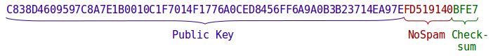

- Introduction
- Crypto
- Node Info
- Protocol Packet
- DHT
- LAN discovery
- Messenger
- TCP client
- TCP connections
- TCP server
- Friend connection
- Friend requests
- Group
- DHT Group Chats
- Net crypto
- network.txt
- Onion
- Ping array
- State Format
- Testing
Introduction
This document is a textual specification of the Tox protocol and all the supporting modules required to implement it. The goal of this document is to give enough guidance to permit a complete and correct implementation of the protocol.
Objectives
This section provides an overview of goals and non-goals of Tox. It provides the reader with:
-
a basic understanding of what problems Tox intends to solve;
-
a means to validate whether those problems are indeed solved by the protocol as specified;
-
the ability to make better tradeoffs and decisions in their own reimplementation of the protocol.
Goals
-
Authentication: Tox aims to provide authenticated communication. This means that during a communication session, both parties can be sure of the other party’s identity. Users are identified by their public key. The initial key exchange is currently not in scope for the Tox protocol. In the future, Tox may provide a means for initial authentication using a challenge/response or shared secret based exchange.
If the secret key is compromised, the user’s identity is compromised, and an attacker can impersonate that user. When this happens, the user must create a new identity with a new public key.
-
End-to-end encryption: The Tox protocol establishes end-to-end encrypted communication links. Shared keys are deterministically derived using a Diffie-Hellman-like method, so keys are never transferred over the network.
-
Forward secrecy: Session keys are re-negotiated when the peer connection is established.
-
Privacy: When Tox establishes a communication link, it aims to avoid leaking to any third party the identities of the parties involved (i.e. their public keys).
Furthermore, it aims to avoid allowing third parties to determine the IP address of a given user.
-
Resilience:
-
Independence of infrastructure: Tox avoids relying on servers as much as possible. Communications are not transmitted via or stored on central servers. Joining a Tox network requires connecting to a well-known node called a bootstrap node. Anyone can run a bootstrap node, and users need not put any trust in them.
-
Tox tries to establish communication paths in difficult network situations. This includes connecting to peers behind a NAT or firewall. Various techniques help achieve this, such as UDP hole-punching, UPnP, NAT-PMP, other untrusted nodes acting as relays, and DNS tunnels.
-
Resistance to basic denial of service attacks: short timeouts make the network dynamic and resilient against poisoning attempts.
-
-
Minimum configuration: Tox aims to be nearly zero-conf. User-friendliness is an important aspect to security. Tox aims to make security easy to achieve for average users.
Non-goals
-
Anonymity is not in scope for the Tox protocol itself, but it provides an easy way to integrate with software providing anonymity, such as Tor.
By default, Tox tries to establish direct connections between peers; as a consequence, each is aware of the other’s IP address, and third parties may be able to determine that a connection has been established between those IP addresses. One of the reasons for making direct connections is that relaying real-time multimedia conversations over anonymity networks is not feasible with the current network infrastructure.
Threat model
TODO(iphydf): Define one.
Data types
All data types are defined before their first use, and their binary protocol representation is given. The protocol representations are normative and must be implemented exactly as specified. For some types, human-readable representations are suggested. An implementation may choose to provide no such representation or a different one. The implementation is free to choose any in-memory representation of the specified types.
Binary formats are specified in tables with length, type, and content descriptions. If applicable, specific enumeration types are used, so types may be self-explanatory in some cases. The length can be either a fixed number in bytes (e.g. 32), a number in bits (e.g. 7 bit), a choice of lengths (e.g. 4 | 16), or an inclusive range (e.g. [0, 100]). Open ranges are denoted [n,] to mean a minimum length of n with no specified maximum length.
Integers
The protocol uses four bounded unsigned integer types. Bounded means they have an upper bound beyond which incrementing is not defined. The integer types support modular arithmetic, so overflow wraps around to zero. Unsigned means their lower bound is 0. Signed integer types are not used. The binary encoding of all integer types is a fixed-width byte sequence with the integer encoded in Big Endian unless stated otherwise.
| Type name | C type | Length | Upper bound |
|---|---|---|---|
| Word8 | uint8_t |
1 | 255 (0xff) |
| Word16 | uint16_t |
2 | 65535 (0xffff) |
| Word32 | uint32_t |
4 | 4294967295 (0xffffffff) |
| Word64 | uint64_t |
8 | 18446744073709551615 (0xffffffffffffffff) |
Strings
A String is a data structure used for human readable text. Strings are sequences of glyphs. A glyph consists of one non-zero-width unicode code point and zero or more zero-width unicode code points. The human-readable representation of a String starts and ends with a quotation mark (") and contains all human-readable glyphs verbatim. Control characters are represented in an isomorphic human-readable way. I.e. every control character has exactly one human-readable representation, and a mapping exists from the human-readable representation to the control character. Therefore, the use of Unicode Control Characters (U+240x) is not permitted without additional marker.
Crypto
The Crypto module contains all the functions and data types related to cryptography. This includes random number generation, encryption and decryption, key generation, operations on nonces and generating random nonces.
Key
A Crypto Number is a large fixed size unsigned (non-negative) integer. Its binary encoding is as a Big Endian integer in exactly the encoded byte size. Its human-readable encoding is as a base-16 number encoded as String. The NaCl implementation libsodium supplies the functions sodium_bin2hex and sodium_hex2bin to aid in implementing the human-readable encoding. The in-memory encoding of these crypto numbers in NaCl already satisfies the binary encoding, so for applications directly using those APIs, binary encoding and decoding is the identity function.
Tox uses four kinds of Crypto Numbers:
| Type | Bits | Encoded byte size |
|---|---|---|
| Public Key | 256 | 32 |
| Secret Key | 256 | 32 |
| Combined Key | 256 | 32 |
| Nonce | 192 | 24 |
Key Pair
A Key Pair is a pair of Secret Key and Public Key. A new key pair is generated using the crypto_box_keypair function of the NaCl crypto library. Two separate calls to the key pair generation function must return distinct key pairs. See the NaCl documentation for details.
A Public Key can be computed from a Secret Key using the NaCl function crypto_scalarmult_base, which computes the scalar product of a standard group element and the Secret Key. See the NaCl documentation for details.
Combined Key
A Combined Key is computed from a Secret Key and a Public Key using the NaCl function crypto_box_beforenm. Given two Key Pairs KP1 (SK1, PK1) and KP2 (SK2, PK2), the Combined Key computed from (SK1, PK2) equals the one computed from (SK2, PK1). This allows for symmetric encryption, as peers can derive the same shared key from their own secret key and their peer’s public key.
In the Tox protocol, packets are encrypted using the public key of the receiver and the secret key of the sender. The receiver decrypts the packets using the receiver’s secret key and the sender’s public key.
The fact that the same key is used to encrypt and decrypt packets on both sides means that packets being sent could be replayed back to the sender if there is nothing to prevent it.
The shared key generation is the most resource intensive part of the encryption/decryption which means that resource usage can be reduced considerably by saving the shared keys and reusing them later as much as possible.
Nonce
A random nonce is generated using the cryptographically secure random number generator from the NaCl library randombytes.
A nonce is incremented by interpreting it as a Big Endian number and adding 1. If the nonce has the maximum value, the value after the increment is 0.
Most parts of the protocol use random nonces. This prevents new nonces from being associated with previous nonces. If many different packets could be tied together due to how the nonces were generated, it might for example lead to tying DHT and onion announce packets together. This would introduce a flaw in the system as non friends could tie some people’s DHT keys and long term keys together.
Box
The Tox protocol differentiates between two types of text: Plain Text and Cipher Text. Cipher Text may be transmitted over untrusted data channels. Plain Text can be Sensitive or Non Sensitive. Sensitive Plain Text must be transformed into Cipher Text using the encryption function before it can be transmitted over untrusted data channels.
The encryption function takes a Combined Key, a Nonce, and a Plain Text, and returns a Cipher Text. It uses crypto_box_afternm to perform the encryption. The meaning of the sentence “encrypting with a secret key, a public key, and a nonce” is: compute a combined key from the secret key and the public key and then use the encryption function for the transformation.
The decryption function takes a Combined Key, a Nonce, and a Cipher Text, and returns either a Plain Text or an error. It uses crypto_box_open_afternm from the NaCl library. Since the cipher is symmetric, the encryption function can also perform decryption, but will not perform message authentication, so the implementation must be careful to use the correct functions.
crypto_box uses xsalsa20 symmetric encryption and poly1305 authentication.
The create and handle request functions are the encrypt and decrypt functions for a type of DHT packets used to send data directly to other DHT nodes. To be honest they should probably be in the DHT module but they seem to fit better here. TODO: What exactly are these functions?
Node Info
Transport Protocol
A Transport Protocol is a transport layer protocol directly below the Tox protocol itself. Tox supports two transport protocols: UDP and TCP. The binary representation of the Transport Protocol is a single bit: 0 for UDP, 1 for TCP. If encoded as standalone value, the bit is stored in the least significant bit of a byte. If followed by other bit-packed data, it consumes exactly one bit.
The human-readable representation for UDP is UDP and for TCP is TCP.
Host Address
A Host Address is either an IPv4 or an IPv6 address. The binary representation of an IPv4 address is a Big Endian 32 bit unsigned integer (4 bytes). For an IPv6 address, it is a Big Endian 128 bit unsigned integer (16 bytes). The binary representation of a Host Address is a 7 bit unsigned integer specifying the address family (2 for IPv4, 10 for IPv6), followed by the address itself.
Thus, when packed together with the Transport Protocol, the first bit of the packed byte is the protocol and the next 7 bits are the address family.
Port Number
A Port Number is a 16 bit number. Its binary representation is a Big Endian 16 bit unsigned integer (2 bytes).
Socket Address
A Socket Address is a pair of Host Address and Port Number. Together with a Transport Protocol, it is sufficient information to address a network port on any internet host.
Node Info (packed node format)
The Node Info data structure contains a Transport Protocol, a Socket Address, and a Public Key. This is sufficient information to start communicating with that node. The binary representation of a Node Info is called the “packed node format”.
| Length | Type | Contents |
|---|---|---|
1 bit |
Transport Protocol | UDP = 0, TCP = 1 |
7 bit |
Address Family | 2 = IPv4, 10 = IPv6 |
4 | 16 |
IP address | 4 bytes for IPv4, 16 bytes for IPv6 |
2 |
Port Number | Port number |
32 |
Public Key | Node ID |
The packed node format is a way to store the node info in a small yet easy to parse format. To store more than one node, simply append another one to the previous one: [packed node 1][packed node 2][...].
In the packed node format, the first byte (high bit protocol, lower 7 bits address family) are called the IP Type. The following table is informative and can be used to simplify the implementation.
| IP Type | Transport Protocol | Address Family |
|---|---|---|
2 (0x02) |
UDP | IPv4 |
10 (0x0a) |
UDP | IPv6 |
130 (0x82) |
TCP | IPv4 |
138 (0x8a) |
TCP | IPv6 |
The number 130 is used for an IPv4 TCP relay and 138 is used to indicate an IPv6 TCP relay.
The reason for these numbers is that the numbers on Linux for IPv4 and IPv6 (the AF_INET and AF_INET6 defines) are 2 and 10. The TCP numbers are just the UDP numbers + 128.
Protocol Packet
A Protocol Packet is the top level Tox protocol element. All other packet types are wrapped in Protocol Packets. It consists of a Packet Kind and a payload. The binary representation of a Packet Kind is a single byte (8 bits). The payload is an arbitrary sequence of bytes.
| Length | Type | Contents |
|---|---|---|
1 |
Packet Kind | The packet kind identifier |
[0,] |
Bytes | Payload |
These top level packets can be transported in a number of ways, the most common way being over the network using UDP or TCP. The protocol itself does not prescribe transport methods, and an implementation is free to implement additional transports such as WebRTC, IRC, or pipes.
In the remainder of the document, different kinds of Protocol Packet are specified with their packet kind and payload. The packet kind is not repeated in the payload description (TODO: actually it mostly is, but later it won’t).
Inside Protocol Packets payload, other packet types can specify additional packet kinds. E.g. inside a Crypto Data packet (0x1b), the Messenger module defines its protocols for messaging, file transfers, etc. Top level Protocol Packets are themselves not encrypted, though their payload may be.
Packet Kind
The following is an exhaustive list of top level packet kind names and their number. Their payload is specified in dedicated sections. Each section is named after the Packet Kind it describes followed by the byte value in parentheses, e.g. Ping Request (0x00).
| Byte value | Packet Kind |
|---|---|
0x00 |
Ping Request |
0x01 |
Ping Response |
0x02 |
Nodes Request |
0x04 |
Nodes Response |
0x18 |
Cookie Request |
0x19 |
Cookie Response |
0x1a |
Crypto Handshake |
0x1b |
Crypto Data |
0x20 |
DHT Request |
0x21 |
LAN Discovery |
0x80 |
Onion Request 0 |
0x81 |
Onion Request 1 |
0x82 |
Onion Request 2 |
0x83 |
Announce Request |
0x84 |
Announce Response |
0x85 |
Onion Data Request |
0x86 |
Onion Data Response |
0x8c |
Onion Response 3 |
0x8d |
Onion Response 2 |
0x8e |
Onion Response 1 |
0xf0 |
Bootstrap Info |
DHT
The DHT is a self-organizing swarm of all nodes in the Tox network. A node in the Tox network is also called a “Tox node”. When we talk about “peers”, we mean any node that is not the local node (the subject). This module takes care of finding the IP and port of nodes and establishing a route to them directly via UDP using hole punching if necessary. The DHT only runs on UDP and so is only used if UDP works.
Every node in the Tox DHT has an ephemeral Key Pair called the DHT Key Pair, consisting of the DHT Secret Key and the DHT Public Key. The DHT Public Key acts as the node address. The DHT Key Pair is renewed every time the Tox instance is closed or restarted. An implementation may choose to renew the key more often, but doing so will disconnect all peers.
The DHT public key of a friend is found using the onion module. Once the DHT public key of a friend is known, the DHT is used to find them and connect directly to them via UDP.
Distance
A Distance is a positive integer. Its human-readable representation is a base-16 number. Distance (type) is an ordered monoid with the associative binary operator + and the identity element 0.
The DHT uses a metric to determine the distance between two nodes. The Distance type is the co-domain of this metric. The metric currently used by the Tox DHT is the XOR of the nodes’ public keys: distance(x, y) = x XOR y. For this computation, public keys are interpreted as Big Endian integers (see Crypto Numbers).
When we speak of a “close node”, we mean that its Distance to the node under consideration is small compared to the Distance to other nodes.
An implementation is not required to provide a Distance type, so it has no specified binary representation. For example, instead of computing a distance and comparing it against another distance, the implementation can choose to implement Distance as a pair of public keys and define an ordering on Distance without computing the complete integral value. This works, because as soon as an ordering decision can be made in the most significant bits, further bits won’t influence that decision.
XOR is a valid metric, i.e. it satisfies the required conditions:
-
Non-negativity
distance(x, y) >= 0: Since public keys are Crypto Numbers, which are by definition non-negative, their XOR is necessarily non-negative. -
Identity of indiscernibles
distance(x, y) == 0iffx == y: The XOR of two integers is zero iff they are equal. -
Symmetry
distance(x, y) == distance(y, x): XOR is a symmetric operation. -
Subadditivity
distance(x, z) <= distance(x, y) + distance(y, z): follows from associativity, sincex XOR z = x XOR (y XOR y) XOR z = distance(x, y) XOR distance(y, z)which is not greater thandistance(x, y) + distance(y, z).
In addition, XOR has other useful properties:
-
Unidirectionality: given the key
xand the distancedthere exist one and only one keyysuch thatdistance(x, y) = d.The implication is that repeated lookups are likely to pass along the same way and thus caching makes sense.
Source: maymounkov-kademlia
Example: Given three nodes with keys 2, 5, and 6:
-
2 XOR 5 = 7 -
2 XOR 6 = 4 -
5 XOR 2 = 7 -
5 XOR 6 = 3 -
6 XOR 2 = 4 -
6 XOR 5 = 3
The closest node from both 2 and 5 is 6. The closest node from 6 is 5 with distance 3. This example shows that a key that is close in terms of integer addition may not necessarily be close in terms of XOR.
Client Lists
A Client List of maximum size k with a given public key as base key is an ordered set of at most k nodes close to the base key. The elements are sorted by distance from the base key. Thus, the first (smallest) element of the set is the closest one to the base key in that set, the last (greatest) element is the furthest away. The maximum size and base key are constant throughout the lifetime of a Client List.
A Client List is full when the number of nodes it contains is the maximum size of the list.
A node is viable for entry if the Client List is not full or the node’s public key has a lower distance from the base key than the current entry with the greatest distance.
If a node is viable and the Client List is full, the entry with the greatest distance from the base key is removed to keep the size below the maximum configured size.
Adding a node whose key already exists will result in an update of the Node Info in the Client List. Removing a node for which no Node Info exists in the Client List has no effect. Thus, removing a node twice is permitted and has the same effect as removing it once.
The iteration order of a Client List is in order of distance from the base key. I.e. the first node seen in iteration is the closest, and the last node is the furthest away in terms of the distance metric.
K-buckets
K-buckets is a data structure for efficiently storing a set of nodes close to a certain key called the base key. The base key is constant throughout the lifetime of a k-buckets instance.
A k-buckets is a map from small integers 0 <= n < 256 to Client Lists of maximum size (k). Each Client List is called a (k-)bucket. A k-buckets is equipped with a base key, and each bucket has this key as its base key. k is called the bucket size. The default bucket size is 8. A large bucket size was chosen to increase the speed at which peers are found.
The above number n is the bucket index. It is a non-negative integer with the range [0, 255], i.e. the range of an 8 bit unsigned integer.
Bucket Index
The index of the bucket can be computed using the following function: bucketIndex(baseKey, nodeKey) = 255 - log_2(distance(baseKey, nodeKey)). This function is not defined when baseKey == nodeKey, meaning k-buckets will never contain a Node Info about the base node.
Thus, each k-bucket contains only Node Infos for whose keys the following holds: if node with key nodeKey is in k-bucket with index n, then bucketIndex(baseKey, nodeKey) == n. Thus, n’th k-bucket consists of nodes for which distance to the base node lies in range [2^n, 2^(n+1) - 1].
The bucket index can be efficiently computed by determining the first bit at which the two keys differ, starting from the most significant bit. So, if the local DHT key starts with e.g. 0x80 and the bucketed node key starts with 0x40, then the bucket index for that node is 0. If the second bit differs, the bucket index is 1. If the keys are almost exactly equal and only the last bit differs, the bucket index is 255.
Manipulating k-buckets
TODO: this is different from kademlia’s least-recently-seen eviction policy; why the existing solution was chosen, how does it affect security, performance and resistance to poisoning? original paper claims that preference of old live nodes results in better persistence and resistance to basic DDoS attacks;
Any update or lookup operation on a k-buckets instance that involves a single node requires us to first compute the bucket index for that node. An update involving a Node Info with nodeKey == baseKey has no effect. If the update results in an empty bucket, that bucket is removed from the map.
Adding a node to, or removing a node from, a k-buckets consists of performing the corresponding operation on the Client List bucket whose index is that of the node’s public key, except that adding a new node to a full bucket has no effect. A node is considered viable for entry if the corresponding bucket is not full.
Iteration order of a k-buckets instance is in order of distance from the base key. I.e. the first node seen in iteration is the closest, and the last node is the furthest away in terms of the distance metric.
DHT node state
Every DHT node contains the following state:
-
DHT Key Pair: The Key Pair used to communicate with other DHT nodes. It is immutable throughout the lifetime of the DHT node.
-
DHT Close List: A set of Node Infos of nodes that are close to the DHT Public Key (public part of the DHT Key Pair). The Close List is represented as a k-buckets data structure, with the DHT Public Key as the Base Key.
-
DHT Search List: A list of Public Keys of nodes that the DHT node is searching for, associated with a DHT Search Entry.
A DHT node state is initialised using a Key Pair, which is stored in the state as DHT Key Pair and as base key for the Close List. Both the Close and Search Lists are initialised to be empty.
DHT Search Entry
A DHT Search Entry contains a Client List with base key the searched node’s Public Key. Once the searched node is found, it is also stored in the Search Entry.
The maximum size of the Client List is set to 8. (Must be the same or smaller than the bucket size of the close list to make sure all the closest peers found will know the node being searched (TODO(zugz): this argument is unclear.)).
A DHT node state therefore contains one Client List for each bucket index in the Close List, and one Client List for each DHT Search Entry. These lists are not required to be disjoint - a node may be in multiple Client Lists simultaneously.
A Search Entry is initialised with the searched-for Public Key. The contained Client List is initialised to be empty.
Manipulating the DHT node state
Adding a search key to the DHT node state creates an empty entry in the Search Nodes list. If a search entry for the public key already existed, the “add” operation has no effect.
Removing a search key removes its search entry and all associated data structures from memory.
The Close List and the Search Entries are termed the Node Lists of the DHT State.
The iteration order over the DHT state is to first process the Close List k-buckets, then the Search List entry Client Lists. Each of these follows the iteration order in the corresponding specification.
A node info is considered to be contained in the DHT State if it is contained in the Close List or in at least one of the Search Entries.
The size of the DHT state is defined to be the number of node infos it contains, counted with multiplicity: node infos contained multiple times, e.g. in the close list and in various search entries, are counted as many times as they appear. Search keys do not directly count towards the state size. So the size of the state is the sum of the sizes of the Close List and the Search Entries.
The state size is relevant to later pruning algorithms that decide when to remove a node info and when to request a ping from stale nodes. Search keys, once added, are never automatically pruned.
Adding a Node Info to the state is done by adding the node to each Node List in the state.
When adding a node info to the state, the search entry for the node’s public key, if it exists, is updated to contain the new node info. All k-buckets and Client Lists that already contain the node info will also be updated. See the corresponding specifications for the update algorithms. However, a node info will not be added to a search entry when it is the node to which the search entry is associated (i.e. the node being search for).
Removing a node info from the state removes it from all k-buckets. If a search entry for the removed node’s public key existed, the node info in that search entry is unset. The search entry itself is not removed.
Self-organisation
Self-organising in the DHT occurs through each DHT peer connecting to an arbitrary number of peers closest to their own DHT public key and some that are further away.
If each peer in the network knows the peers with the DHT public key closest to its DHT public key, then to find a specific peer with public key X a peer just needs to recursively ask peers in the DHT for known peers that have the DHT public keys closest to X. Eventually the peer will find the peers in the DHT that are the closest to that peer and, if that peer is online, they will find them.
DHT Packet
The DHT Packet contains the sender’s DHT Public Key, an encryption Nonce, and an encrypted payload. The payload is encrypted with the DHT secret key of the sender, the DHT public key of the receiver, and the nonce that is sent along with the packet. DHT Packets are sent inside Protocol Packets with a varying Packet Kind.
| Length | Type | Contents |
|---|---|---|
32 |
Public Key | Sender DHT Public Key |
24 |
Nonce | Random nonce |
[16,] |
Bytes | Encrypted payload |
The encrypted payload is at least 16 bytes long, because the encryption includes a MAC of 16 bytes. A 16 byte payload would thus be the empty message. The DHT protocol never actually sends empty messages, so in reality the minimum size is 27 bytes for the Ping Packet.
RPC Services
A DHT RPC Service consists of a Request packet and a Response packet. A DHT RPC Packet contains a payload and a Request ID. This ID is a 64 bit unsigned integer that helps identify the response for a given request.
Replies to RPC requests
A reply to a Request packet is a Response packet with the Request ID in the Response packet set equal to the Request ID in the Request packet. A response is accepted if and only if it is the first received reply to a request which was sent sufficiently recently, according to a time limit which depends on the service.
DHT RPC Packets are encrypted and transported within DHT Packets.
| Length | Type | Contents |
|---|---|---|
[0,] |
Bytes | Payload |
8 |
uint64_t |
Request ID |
The minimum payload size is 0, but in reality the smallest sensible payload size is 1. Since the same symmetric key is used in both communication directions, an encrypted Request would be a valid encrypted Response if they contained the same plaintext.
Parts of the protocol using RPC packets must take care to make Request payloads not be valid Response payloads. For instance, Ping Packets carry a boolean flag that indicate whether the payload corresponds to a Request or a Response.
The Request ID provides some resistance against replay attacks. If there were no Request ID, it would be easy for an attacker to replay old responses and thus provide nodes with out-of-date information. A Request ID should be randomly generated for each Request which is sent.
Ping Service
The Ping Service is used to check if a node is responsive.
A Ping Packet payload consists of just a boolean value saying whether it is a request or a response.
The one byte boolean inside the encrypted payload is added to prevent peers from creating a valid Ping Response from a Ping Request without decrypting the packet and encrypting a new one. Since symmetric encryption is used, the encrypted Ping Response would be byte-wise equal to the Ping Request without the discriminator byte.
| Length | Type | Contents |
|---|---|---|
1 |
Bool | Response flag: 0x00 for Request, 0x01 for Response |
Ping Request (0x00)
A Ping Request is a Ping Packet with the response flag set to False. When a Ping Request is received and successfully decrypted, a Ping Response packet is created and sent back to the requestor.
Ping Response (0x01)
A Ping Response is a Ping Packet with the response flag set to True.
Nodes Service
The Nodes Service is used to query another DHT node for up to 4 nodes they know that are the closest to a requested node.
The DHT Nodes RPC service uses the Packed Node Format.
Only the UDP Protocol (IP Type 2 and 10) is used in the DHT module when sending nodes with the packed node format. This is because the TCP Protocol is used to send TCP relay information and the DHT is UDP only.
Nodes Request (0x02)
| Length | Type | Contents |
|---|---|---|
32 |
Public Key | Requested DHT Public Key |
The DHT Public Key sent in the request is the one the sender is searching for.
Nodes Response (0x04)
| Length | Type | Contents |
|---|---|---|
1 |
Int | Number of nodes in the response (maximum 4) |
[39, 204] |
Node Infos | Nodes in Packed Node Format |
An IPv4 node is 39 bytes, an IPv6 node is 51 bytes, so the maximum size of the packed Node Infos is 51 * 4 = 204 bytes.
Nodes responses should contain the 4 closest nodes that the sender of the response has in their lists of known nodes.
DHT Operation
DHT Initialisation
A new DHT node is initialised with a DHT State with a fresh random key pair, an empty close list, and a search list containing 2 empty search entries searching for the public keys of fresh random key pairs.
Periodic sending of Nodes Requests
For each Nodes List in the DHT State, every 20 seconds we send a Nodes Request to a random node on the list, searching for the base key of the list.
When a Nodes List first becomes populated with nodes, we send 5 such random Nodes Requests in quick succession.
Random nodes are chosen since being able to predict which node a node will send a request to next could make some attacks that disrupt the network easier, as it adds a possible attack vector.
Furthermore, we periodically check every node for responsiveness by sending it a Nodes Request: for each Nodes List in the DHT State, we send each node on the list a Nodes Request every 60 seconds, searching for the base key of the list. We remove from the DHT State any node from which we persistently fail to receive Nodes Responses.
c-toxcore’s implementation of checking and timeouts: A Last Checked time is maintained for each node in each list. When a node is added to a list, if doing so evicts a node from the list then the Last Checked time is set to that of the evicted node, and otherwise it is set to 0. This includes updating an already present node. Nodes from which we have not received a Nodes Response for 122 seconds are considered Bad; they remain in the DHT State, but are preferentially overwritten when adding to the DHT State, and are ignored for all operations except the once-per-60s checking described above. If we have not received a Nodes Response for 182 seconds, the node is not even checked. So one check is sent after the node becomes Bad. In the special case that every node in the Close List is Bad, they are all checked once more.)
hs-toxcore implementation of checking and timeouts: We maintain a Last Checked timestamp and a Checks Counter on each node on each Nodes List in the Dht State. When a node is added to a list, these are set respectively to the current time and to 0. This includes updating an already present node. We periodically pass through the nodes on the lists, and for each which is due a check, we: check it, update the timestamp, increment the counter, and, if the counter is then 2, remove the node from the list. This is pretty close to the behaviour of c-toxcore, but much simpler. TODO: currently hs-toxcore doesn’t do anything to try to recover if the Close List becomes empty. We could maintain a separate list of the most recently heard from nodes, and repopulate the Close List with that if the Close List becomes empty.
Handling Nodes Response packets
When we receive a valid Nodes Response packet, we first check that it is a reply to a Nodes Request which we sent within the last 60 seconds to the node from which we received the response, and that no previous reply has been received. If this check fails, the packet is ignored. If the check succeeds, first we add to the DHT State the node from which the response was sent. Then, for each node listed in the response and for each Nodes List in the DHT State which does not currently contain the node and to which the node is viable for entry, we send a Nodes Request to the node with the requested public key being the base key of the Nodes List.
An implementation may choose not to send every such Nodes Request. (c-toxcore only sends so many per list (8 for the Close List, 4 for a Search Entry) per 50ms, prioritising the closest to the base key).
Handling Nodes Request packets
When we receive a Nodes Request packet from another node, we reply with a Nodes Response packet containing the 4 nodes in the DHT State which are the closest to the public key in the packet. If there are fewer than 4 nodes in the state, we reply with all the nodes in the state. If there are no nodes in the state, no reply is sent.
We also send a Ping Request when this is appropriate; see below.
Handling Ping Request packets
When a valid Ping Request packet is received, we reply with a Ping Response.
We also send a Ping Request when this is appropriate; see below.
Handling Ping Response packets
When we receive a valid Ping Response packet, we first check that it is a reply to a Ping Request which we sent within the last 5 seconds to the node from which we received the response, and that no previous reply has been received. If this check fails, the packet is ignored. If the check succeeds, we add to the DHT State the node from which the response was sent.
Sending Ping Requests
When we receive a Nodes Request or a Ping Request, in addition to the handling described above, we sometimes send a Ping Request. Namely, we send a Ping Request to the node which sent the packet if the node is viable for entry to the Close List and is not already in the Close List. An implementation may (TODO: should?) choose not to send every such Ping Request. (c-toxcore sends at most 32 every 2 seconds, preferring closer nodes.)
DHT Request Packets
DHT Request packets are used to route encrypted data from a sender to another node, referred to as the addressee of the packet, via a third node.
A DHT Request Packet is sent as the payload of a Protocol Packet with the corresponding Packet Kind. It contains the DHT Public Key of an addressee, and a DHT Packet which is to be received by the addressee.
| Length | Type | Contents |
|---|---|---|
32 |
Public Key | Addressee DHT Public Key |
[72,] |
DHT Packet | DHT Packet |
Handling DHT Request packets
A DHT node that receives a DHT request packet checks whether the addressee public key is their DHT public key. If it is, they will decrypt and handle the packet. Otherwise, they will check whether the addressee DHT public key is the DHT public key of one of the nodes in their Close List. If it isn’t, they will drop the packet. If it is they will resend the packet, unaltered, to that DHT node.
DHT request packets are used for DHT public key packets (see onion) and NAT ping packets.
NAT ping packets
A NAT ping packet is sent as the payload of a DHT request packet.
We use NAT ping packets to see if a friend we are not connected to directly is online and ready to do the hole punching.
NAT ping request
| Length | Contents |
|---|---|
1 |
uint8_t (0xfe) |
1 |
uint8_t (0x00) |
8 |
uint64_t random number |
NAT ping response
| Length | Contents |
|---|---|
1 |
uint8_t (0xfe) |
1 |
uint8_t (0x01) |
8 |
uint64_t random number (the same that was received in request) |
TODO: handling these packets.
Effects of chosen constants on performance
If the bucket size of the k-buckets were increased, it would increase the amount of packets needed to check if each node is still alive, which would increase the bandwidth usage, but reliability would go up. If the number of nodes were decreased, reliability would go down along with bandwidth usage. The reason for this relationship between reliability and number of nodes is that if we assume that not every node has its UDP ports open or is behind a cone NAT it means that each of these nodes must be able to store a certain number of nodes behind restrictive NATs in order for others to be able to find those nodes behind restrictive NATs. For example if 7/8 nodes were behind restrictive NATs, using 8 nodes would not be enough because the chances of some of these nodes being impossible to find in the network would be too high.
TODO(zugz): this seems a rather wasteful solution to this problem.
If the ping timeouts and delays between pings were higher it would decrease the bandwidth usage but increase the amount of disconnected nodes that are still being stored in the lists. Decreasing these delays would do the opposite.
If the maximum size 8 of the DHT Search Entry Client Lists were increased would increase the bandwidth usage, might increase hole punching efficiency on symmetric NATs (more ports to guess from, see Hole punching) and might increase the reliability. Lowering this number would have the opposite effect.
The timeouts and number of nodes in lists for toxcore were picked by feeling alone and are probably not the best values. This also applies to the behavior which is simple and should be improved in order to make the network resist better to sybil attacks.
TODO: consider giving min and max values for the constants.
NATs
We assume that peers are either directly accessible or are behind one of 3 types of NAT:
Cone NATs: Assign one whole port to each UDP socket behind the NAT; any packet from any IP/port sent to that assigned port from the internet will be forwarded to the socket behind it.
Restricted Cone NATs: Assign one whole port to each UDP socket behind the NAT. However, it will only forward packets from IPs that the UDP socket has sent a packet to.
Symmetric NATs: The worst kind of NAT, they assign a new port for each IP/port a packet is sent to. They treat each new peer you send a UDP packet to as a ’connection’ and will only forward packets from the IP/port of that ’connection’.
Hole punching
Holepunching on normal cone NATs is achieved simply through the way in which the DHT functions.
If more than half of the 8 peers closest to the friend in the DHT return an IP/port for the friend and we send a ping request to each of the returned IP/ports but get no response. If we have sent 4 ping requests to 4 IP/ports that supposedly belong to the friend and get no response, then this is enough for toxcore to start the hole punching. The numbers 8 and 4 are used in toxcore and were chosen based on feel alone and so may not be the best numbers.
Before starting the hole punching, the peer will send a NAT ping packet to the friend via the peers that say they know the friend. If a NAT ping response with the same random number is received the hole punching will start.
If a NAT ping request is received, we will first check if it is from a friend. If it is not from a friend it will be dropped. If it is from a friend, a response with the same 8 byte number as in the request will be sent back via the nodes that know the friend sending the request. If no nodes from the friend are known, the packet will be dropped.
Receiving a NAT ping response therefore means that the friend is both online and actively searching for us, as that is the only way they would know nodes that know us. This is important because hole punching will work only if the friend is actively trying to connect to us.
NAT ping requests are sent every 3 seconds in toxcore, if no response is received for 6 seconds, the hole punching will stop. Sending them in longer intervals might increase the possibility of the other node going offline and ping packets sent in the hole punching being sent to a dead peer but decrease bandwidth usage. Decreasing the intervals will have the opposite effect.
There are 2 cases that toxcore handles for the hole punching. The first case is if each 4+ peers returned the same IP and port. The second is if the 4+ peers returned same IPs but different ports.
A third case that may occur is the peers returning different IPs and ports. This can only happen if the friend is behind a very restrictive NAT that cannot be hole punched or if the peer recently connected to another internet connection and some peers still have the old one stored. Since there is nothing we can do for the first option it is recommended to just use the most common IP returned by the peers and to ignore the other IP/ports.
In the case where the peers return the same IP and port it means that the other friend is on a restricted cone NAT. These kinds of NATs can be hole punched by getting the friend to send a packet to our public IP/port. This means that hole punching can be achieved easily and that we should just continue sending DHT ping packets regularly to that IP/port until we get a ping response. This will work because the friend is searching for us in the DHT and will find us and will send us a packet to our public IP/port (or try to with the hole punching), thereby establishing a connection.
For the case where peers do not return the same ports, this means that the other peer is on a symmetric NAT. Some symmetric NATs open ports in sequences so the ports returned by the other peers might be something like: 1345, 1347, 1389, 1395. The method to hole punch these NATs is to try to guess which ports are more likely to be used by the other peer when they try sending us ping requests and send some ping requests to these ports. Toxcore just tries all the ports beside each returned port (ex: for the 4 ports previously it would try: 1345, 1347, 1389, 1395, 1346, 1348, 1390, 1396, 1344, 1346…) getting gradually further and further away and, although this works, the method could be improved. When using this method toxcore will try up to 48 ports every 3 seconds until both connect. After 5 tries toxcore doubles this and starts trying ports from 1024 (48 each time) along with the previous port guessing. This is because I have noticed that this seemed to fix it for some symmetric NATs, most likely because a lot of them restart their count at 1024.
Increasing the amount of ports tried per second would make the hole punching go faster but might DoS NATs due to the large number of packets being sent to different IPs in a short amount of time. Decreasing it would make the hole punching slower.
This works in cases where both peers have different NATs. For example, if A and B are trying to connect to each other: A has a symmetric NAT and B a restricted cone NAT. A will detect that B has a restricted cone NAT and keep sending ping packets to his one IP/port. B will detect that A has a symmetric NAT and will send packets to it to try guessing his ports. If B manages to guess the port A is sending packets from they will connect together.
DHT Bootstrap Info (0xf0)
Bootstrap nodes are regular Tox nodes with a stable DHT public key. This means the DHT public key does not change across restarts. DHT bootstrap nodes have one additional request kind: Bootstrap Info. The request is simply a packet of length 78 bytes where the first byte is 0xf0. The other bytes are ignored.
The response format is as follows:
| Length | Type | Contents |
|---|---|---|
4 |
Word32 | Bootstrap node version |
256 |
Bytes | Message of the day |
LAN discovery
LAN discovery is a way to discover Tox peers that are on a local network. If two Tox friends are on a local network, the most efficient way for them to communicate together is to use the local network. If a Tox client is opened on a local network in which another Tox client exists then good behavior would be to bootstrap to the network using the Tox client on the local network. This is what LAN discovery aims to accomplish.
LAN discovery works by sending a UDP packet through the toxcore UDP socket to the interface broadcast address on IPv4, the global broadcast address (255.255.255.255) and the multicast address on IPv6 (FF02::1) on the default Tox UDP port (33445).
The LAN Discovery packet:
| Length | Contents |
|---|---|
1 |
uint8_t (33) |
32 |
DHT public key |
LAN Discovery packets contain the DHT public key of the sender. When a LAN Discovery packet is received, a DHT get nodes packet will be sent to the sender of the packet. This means that the DHT instance will bootstrap itself to every peer from which it receives one of these packets. Through this mechanism, Tox clients will bootstrap themselves automatically from other Tox clients running on the local network.
When enabled, toxcore sends these packets every 10 seconds to keep delays low. The packets could be sent up to every 60 seconds but this would make peer finding over the network 6 times slower.
LAN discovery enables two friends on a local network to find each other as the DHT prioritizes LAN addresses over non LAN addresses for DHT peers. Sending a get node request/bootstrapping from a peer successfully should also add them to the list of DHT peers if we are searching for them. The peer must not be immediately added if a LAN discovery packet with a DHT public key that we are searching for is received as there is no cryptographic proof that this packet is legitimate and not maliciously crafted. This means that a DHT get node or ping packet must be sent, and a valid response must be received, before we can say that this peer has been found.
LAN discovery is how Tox handles and makes everything work well on LAN.
Messenger
Messenger is the module at the top of all the other modules. It sits on top of friend_connection in the hierarchy of toxcore.
Messenger takes care of sending and receiving messages using the connection provided by friend_connection. The module provides a way for friends to connect and makes it usable as an instant messenger. For example, Messenger lets users set a nickname and status message which it then transmits to friends when they are online. It also allows users to send messages to friends and builds an instant messenging system on top of the lower level friend_connection module.
Messenger offers two methods to add a friend. The first way is to add a friend with only their long term public key, this is used when a friend needs to be added but for some reason a friend request should not be sent. The friend should only be added. This method is most commonly used to accept friend requests but could also be used in other ways. If two friends add each other using this function they will connect to each other. Adding a friend using this method just adds the friend to friend_connection and creates a new friend entry in Messenger for the friend.
The Tox ID is used to identify peers so that they can be added as friends in Tox. In order to add a friend, a Tox user must have the friend’s Tox ID. The Tox ID contains the long term public key of the peer (32 bytes) followed by the 4 byte nospam (see: friend_requests) value and a 2 byte XOR checksum. The method of sending the Tox ID to others is up to the user and the client but the recommended way is to encode it in hexadecimal format and have the user manually send it to the friend using another program.
Tox ID:

| Length | Contents |
|---|---|
32 |
long term public key |
4 |
nospam |
2 |
checksum |
The checksum is calculated by XORing the first two bytes of the ID with the next two bytes, then the next two bytes until all the 36 bytes have been XORed together. The result is then appended to the end to form the Tox ID.
The user must make sure the Tox ID is not intercepted and replaced in transit by a different Tox ID, which would mean the friend would connect to a malicious person instead of the user, though taking reasonable precautions as this is outside the scope of Tox. Tox assumes that the user has ensured that they are using the correct Tox ID, belonging to the intended person, to add a friend.
The second method to add a friend is by using their Tox ID and a message to be sent in a friend request. This way of adding friends will try to send a friend request, with the set message, to the peer whose Tox ID was added. The method is similar to the first one, except that a friend request is crafted and sent to the other peer.
When a friend connection associated to a Messenger friend goes online, a ONLINE packet will be sent to them. Friends are only set as online if an ONLINE packet is received.
As soon as a friend goes online, Messenger will stop sending friend requests to that friend, if it was sending them, as they are redundant for this friend.
Friends will be set as offline if either the friend connection associated to them goes offline or if an OFFLINE packet is received from the friend.
Messenger packets are sent to the friend using the online friend connection to the friend.
Should Messenger need to check whether any of the non lossy packets in the following list were received by the friend, for example to implement receipts for text messages, net_crypto can be used. The net_crypto packet number, used to send the packets, should be noted and then net_crypto checked later to see if the bottom of the send array is after this packet number. If it is, then the friend has received them. Note that net_crypto packet numbers could overflow after a long time, so checks should happen within 2**32 net_crypto packets sent with the same friend connection.
Message receipts for action messages and normal text messages are implemented by adding the net_crypto packet number of each message, along with the receipt number, to the top of a linked list that each friend has as they are sent. Every Messenger loop, the entries are read from the bottom and entries are removed and passed to the client until an entry that refers to a packet not yet received by the other is reached, when this happens it stops.
List of Messenger packets:
ONLINE
length: 1 byte
| Length | Contents |
|---|---|
1 |
uint8_t (0x18) |
Sent to a friend when a connection is established to tell them to mark us as online in their friends list. This packet and the OFFLINE packet are necessary as friend_connections can be established with non-friends who are part of a groupchat. The two packets are used to differentiate between these peers, connected to the user through groupchats, and actual friends who ought to be marked as online in the friendlist.
On receiving this packet, Messenger will show the peer as being online.
OFFLINE
length: 1 byte
| Length | Contents |
|---|---|
1 |
uint8_t (0x19) |
Sent to a friend when deleting the friend. Prevents a deleted friend from seeing us as online if we are connected to them because of a group chat.
On receiving this packet, Messenger will show this peer as offline.
NICKNAME
length: 1 byte to 129 bytes.
| Length | Contents |
|---|---|
1 |
uint8_t (0x30) |
[0, 128] |
Nickname as a UTF8 byte string |
Used to send the nickname of the peer to others. This packet should be sent every time to each friend every time they come online and each time the nickname is changed.
STATUSMESSAGE
length: 1 byte to 1008 bytes.
| Length | Contents |
|---|---|
1 |
uint8_t (0x31) |
[0, 1007] |
Status message as a UTF8 byte string |
Used to send the status message of the peer to others. This packet should be sent every time to each friend every time they come online and each time the status message is changed.
USERSTATUS
length: 2 bytes
| Length | Contents |
|---|---|
1 |
uint8_t (0x32) |
1 |
uint8_t status (0 = online, 1 = away, 2 = busy) |
Used to send the user status of the peer to others. This packet should be sent every time to each friend every time they come online and each time the user status is changed.
TYPING
length: 2 bytes
| Length | Contents |
|---|---|
1 |
uint8_t (0x33) |
1 |
uint8_t typing status (0 = not typing, 1 = typing) |
Used to tell a friend whether the user is currently typing or not.
MESSAGE
| Length | Contents |
|---|---|
1 |
uint8_t (0x40) |
[0, 1372] |
Message as a UTF8 byte string |
Used to send a normal text message to the friend.
ACTION
| Length | Contents |
|---|---|
1 |
uint8_t (0x41) |
[0, 1372] |
Action message as a UTF8 byte string |
Used to send an action message (like an IRC action) to the friend.
MSI
| Length | Contents |
|---|---|
1 |
uint8_t (0x45) |
? |
data |
Reserved for Tox AV usage.
File Transfer Related Packets
FILE_SENDREQUEST
| Length | Contents |
|---|---|
1 |
uint8_t (0x50) |
1 |
uint8_t file number |
4 |
uint32_t file type |
8 |
uint64_t file size |
32 |
file id (32 bytes) |
[0, 255] |
filename as a UTF8 byte string |
Note that file type and file size are sent in big endian/network byte format.
FILE_CONTROL
length: 4 bytes if control_type isn’t seek. 8 bytes if control_type is seek.
| Length | Contents |
|---|---|
1 |
uint8_t (0x51) |
1 |
uint8_t send_receive |
1 |
uint8_t file number |
1 |
uint8_t control_type |
8 |
uint64_t seek parameter |
send_receive is 0 if the control targets a file being sent (by the peer sending the file control), and 1 if it targets a file being received.
control_type can be one of: 0 = accept, 1 = pause, 2 = kill, 3 = seek.
The seek parameter is only included when control_type is seek (3).
Note that if it is included the seek parameter will be sent in big endian/network byte format.
FILE_DATA
length: 2 to 1373 bytes.
| Length | Contents |
|---|---|
1 |
uint8_t (0x52) |
1 |
uint8_t file number |
[0, 1371] |
file data piece |
Files are transferred in Tox using File transfers.
To initiate a file transfer, the friend creates and sends a FILE_SENDREQUEST packet to the friend it wants to initiate a file transfer to.
The first part of the FILE_SENDREQUEST packet is the file number. The file number is the number used to identify this file transfer. As the file number is represented by a 1 byte number, the maximum amount of concurrent files Tox can send to a friend is 256. 256 file transfers per friend is enough that clients can use tricks like queueing files if there are more files needing to be sent.
256 outgoing files per friend means that there is a maximum of 512 concurrent file transfers, between two users, if both incoming and outgoing file transfers are counted together.
As file numbers are used to identify the file transfer, the Tox instance must make sure to use a file number that isn’t used for another outgoing file transfer to that same friend when creating a new outgoing file transfer. File numbers are chosen by the file sender and stay unchanged for the entire duration of the file transfer. The file number is used by both FILE_CONTROL and FILE_DATA packets to identify which file transfer these packets are for.
The second part of the file transfer request is the file type. This is simply a number that identifies the type of file. for example, tox.h defines the file type 0 as being a normal file and type 1 as being an avatar meaning the Tox client should use that file as an avatar. The file type does not effect in any way how the file is transfered or the behavior of the file transfer. It is set by the Tox client that creates the file transfers and send to the friend untouched.
The file size indicates the total size of the file that will be transfered. A file size of UINT64_MAX (maximum value in a uint64_t) means that the size of the file is undetermined or unknown. For example if someone wanted to use Tox file transfers to stream data they would set the file size to UINT64_MAX. A file size of 0 is valid and behaves exactly like a normal file transfer.
The file id is 32 bytes that can be used to uniquely identify the file transfer. For example, avatar transfers use it as the hash of the avatar so that the receiver can check if they already have the avatar for a friend which saves bandwidth. It is also used to identify broken file transfers across toxcore restarts (for more info see the file transfer section of tox.h). The file transfer implementation does not care about what the file id is, as it is only used by things above it.
The last part of the file transfer is the optional file name which is used to tell the receiver the name of the file.
When a FILE_SENDREQUEST packet is received, the implementation validates and sends the info to the Tox client which decides whether they should accept the file transfer or not.
To refuse or cancel a file transfer, they will send a FILE_CONTROL packet with control_type 2 (kill).
FILE_CONTROL packets are used to control the file transfer. FILE_CONTROL packets are used to accept/unpause, pause, kill/cancel and seek file transfers. The control_type parameter denotes what the file control packet does.
The send_receive and file number are used to identify a specific file transfer. Since file numbers for outgoing and incoming files are not related to each other, the send_receive parameter is used to identify if the file number belongs to files being sent or files being received. If send_receive is 0, the file number corresponds to a file being sent by the user sending the file control packet. If send_receive is 1, it corresponds to a file being received by the user sending the file control packet.
control_type indicates the purpose of the FILE_CONTROL packet. control_type of 0 means that the FILE_CONTROL packet is used to tell the friend that the file transfer is accepted or that we are unpausing a previously paused (by us) file transfer. control_type of 1 is used to tell the other to pause the file transfer.
If one party pauses a file transfer, that party must be the one to unpause it. Should both sides pause a file transfer, both sides must unpause it before the file can be resumed. For example, if the sender pauses the file transfer, the receiver must not be able to unpause it. To unpause a file transfer, control_type 0 is used. Files can only be paused when they are in progress and have been accepted.
control_type 2 is used to kill, cancel or refuse a file transfer. When a FILE_CONTROL is received, the targeted file transfer is considered dead, will immediately be wiped and its file number can be reused. The peer sending the FILE_CONTROL must also wipe the targeted file transfer from their side. This control type can be used by both sides of the transfer at any time.
control_type 3, the seek control type is used to tell the sender of the file to start sending from a different index in the file than 0. It can only be used right after receiving a FILE_SENDREQUEST packet and before accepting the file by sending a FILE_CONTROL with control_type 0. When this control_type is used, an extra 8 byte number in big endian format is appended to the FILE_CONTROL that is not present with other control types. This number indicates the index in bytes from the beginning of the file at which the file sender should start sending the file. The goal of this control type is to ensure that files can be resumed across core restarts. Tox clients can know if they have received a part of a file by using the file id and then using this packet to tell the other side to start sending from the last received byte. If the seek position is bigger or equal to the size of the file, the seek packet is invalid and the one receiving it will discard it.
To accept a file Tox will therefore send a seek packet, if it is needed, and then send a FILE_CONTROL packet with control_type 0 (accept) to tell the file sender that the file was accepted.
Once the file transfer is accepted, the file sender will start sending file data in sequential chunks from the beginning of the file (or the position from the FILE_CONTROL seek packet if one was received).
File data is sent using FILE_DATA packets. The file number corresponds to the file transfer that the file chunks belong to. The receiver assumes that the file transfer is over as soon as a chunk with the file data size not equal to the maximum size (1371 bytes) is received. This is how the sender tells the receiver that the file transfer is complete in file transfers where the size of the file is unknown (set to UINT64_MAX). The receiver also assumes that if the amount of received data equals to the file size received in the FILE_SENDREQUEST, the file sending is finished and has been successfully received. Immediately after this occurs, the receiver frees up the file number so that a new incoming file transfer can use that file number. The implementation should discard any extra data received which is larger than the file size received at the beginning.
In 0 filesize file transfers, the sender will send one FILE_DATA packet with a file data size of 0.
The sender will know if the receiver has received the file successfully by checking if the friend has received the last FILE_DATA packet sent (containing the last chunk of the file). net_crypto can be used to check whether packets sent through it have been received by storing the packet number of the sent packet and verifying later in net_crypto to see whether it was received or not. As soon as net_crypto says the other received the packet, the file transfer is considered successful, wiped and the file number can be reused to send new files.
FILE_DATA packets should be sent as fast as the net_crypto connection can handle it respecting its congestion control.
If the friend goes offline, all file transfers are cleared in toxcore. This makes it simpler for toxcore as it does not have to deal with resuming file transfers. It also makes it simpler for clients as the method for resuming file transfers remains the same, even if the client is restarted or toxcore loses the connection to the friend because of a bad internet connection.
Group Chat Related Packets
| Packet ID | Packet Name |
|---|---|
| 0x60 | INVITE_GROUPCHAT |
| 0x61 | ONLINE_PACKET |
| 0x62 | DIRECT_GROUPCHAT |
| 0x63 | MESSAGE_GROUPCHAT |
| 0xC7 | LOSSY_GROUPCHAT |
Messenger also takes care of saving the friends list and other friend information so that it’s possible to close and start toxcore while keeping all your friends, your long term key and the information necessary to reconnect to the network.
Important information messenger stores includes: the long term private key, our current nospam value, our friends’ public keys and any friend requests the user is currently sending. The network DHT nodes, TCP relays and some onion nodes are stored to aid reconnection.
In addition to this, a lot of optional data can be stored such as the usernames of friends, our current username, status messages of friends, our status message, etc… can be stored. The exact format of the toxcore save is explained later.
The TCP server is run from the toxcore messenger module if the client has enabled it. TCP server is usually run independently as part of the bootstrap node package but it can be enabled in clients. If it is enabled in toxcore, Messenger will add the running TCP server to the TCP relay.
Messenger is the module that transforms code that can connect to friends based on public key into a real instant messenger.
TCP client
TCP client is the client for the TCP server. It establishes and keeps a connection to the TCP server open.
All the packet formats are explained in detail in TCP server so this section will only cover TCP client specific details which are not covered in the TCP server documentation.
TCP clients can choose to connect to TCP servers through a proxy. Most common types of proxies (SOCKS, HTTP) work by establishing a connection through a proxy using the protocol of that specific type of proxy. After the connection through that proxy to a TCP server is established, the socket behaves from the point of view of the application exactly like a TCP socket that connects directly to a TCP server instance. This means supporting proxies is easy.
TCP client first establishes a TCP connection, either through a proxy or directly to a TCP server. It uses the DHT public key as its long term key when connecting to the TCP server.
It establishes a secure connection to the TCP server. After establishing a connection to the TCP server, and when the handshake response has been received from the TCP server, the toxcore implementation immediately sends a ping packet. Ideally the first packets sent would be routing request packets but this solution aids code simplicity and allows the server to confirm the connection.
Ping packets, like all other data packets, are sent as encrypted packets.
Ping packets are sent by the toxcore TCP client every 30 seconds with a timeout of 10 seconds, the same interval and timeout as toxcore TCP server ping packets. They are the same because they accomplish the same thing.
TCP client must have a mechanism to make sure important packets (routing requests, disconnection notifications, ping packets, ping response packets) don’t get dropped because the TCP socket is full. Should this happen, the TCP client must save these packets and prioritize sending them, in order, when the TCP socket on the server becomes available for writing again. TCP client must also take into account that packets might be bigger than the number of bytes it can currently write to the socket. In this case, it must save the bytes of the packet that it didn’t write to the socket and write them to the socket as soon as the socket allows so that the connection does not get broken. It must also assume that it may receive only part of an encrypted packet. If this occurs it must save the part of the packet it has received and wait for the rest of the packet to arrive before handling it.
TCP client can be used to open up a route to friends who are connected to the TCP server. This is done by sending a routing request to the TCP server with the DHT public key of the friend. This tells the server to register a connection_id to the DHT public key sent in the packet. The server will then respond with a routing response packet. If the connection was accepted, the TCP client will store the connection id for this connection. The TCP client will make sure that routing response packets are responses to a routing packet that it sent by storing that it sent a routing packet to that public key and checking the response against it. This prevents the possibility of a bad TCP server exploiting the client.
The TCP client will handle connection notifications and disconnection notifications by alerting the module using it that the connection to the peer is up or down.
TCP client will send a disconnection notification to kill a connection to a friend. It must send a disconnection notification packet regardless of whether the peer was online or offline so that the TCP server will unregister the connection.
Data to friends can be sent through the TCP relay using OOB (out of band) packets and connected connections. To send an OOB packet, the DHT public key of the friend must be known. OOB packets are sent in blind and there is no way to query the TCP relay to see if the friend is connected before sending one. OOB packets should be sent when the connection to the friend via the TCP relay isn’t in an connected state but it is known that the friend is connected to that relay. If the friend is connected via the TCP relay, then normal data packets must be sent as they are smaller than OOB packets.
OOB recv and data packets must be handled and passed to the module using it.
TCP connections
TCP_connections takes care of handling multiple TCP client instances to establish a reliable connection via TCP relays to a friend. Connecting to a friend with only one relay would not be very reliable, so TCP_connections provides the level of abstraction needed to manage multiple relays. For example, it ensures that if a relay goes down, the connection to the peer will not be impacted. This is done by connecting to the other peer with more than one relay.
TCP_connections is above TCP client and below net_crypto.
A TCP connection in TCP_connections is defined as a connection to a peer though one or more TCP relays. To connect to another peer with TCP_connections, a connection in TCP_connections to the peer with DHT public key X will be created. Some TCP relays which we know the peer is connected to will then be associated with that peer. If the peer isn’t connected directly yet, these relays will be the ones that the peer has sent to us via the onion module. The peer will also send some relays it is directly connected to once a connection is established, however, this is done by another module.
TCP_connections has a list of all relays it is connected to. It tries to keep the number of relays it is connected to as small as possible in order to minimize load on relays and lower bandwidth usage for the client. The desired number of TCP relay connections per peer is set to 3 in toxcore with the maximum number set to 6. The reason for these numbers is that 1 would mean no backup relays and 2 would mean only 1 backup. To be sure that the connection is reliable 3 seems to be a reasonable lower bound. The maximum number of 6 is the maximum number of relays that can be tied to each peer. If 2 peers are connected each to the same 6+ relays and they both need to be connected to that amount of relays because of other friends this is where this maximum comes into play. There is no reason why this number is 6 but in toxcore it has to be at least double than the desired number (3) because the code assumes this.
If necessary, TCP_connections will connect to TCP relays to use them to send onion packets. This is only done if there is no UDP connection to the network. When there is a UDP connection, packets are sent with UDP only because sending them with TCP relays can be less reliable. It is also important that we are connected at all times to some relays as these relays will be used by TCP only peers to initiate a connection to us.
In toxcore, each client is connected to 3 relays even if there are no TCP peers and the onion is not needed. It might be optimal to only connect to these relays when toxcore is initializing as this is the only time when peers will connect to us via TCP relays we are connected to. Due to how the onion works, after the initialization phase, where each peer is searched in the onion and then if they are found the info required to connect back (DHT pk, TCP relays) is sent to them, there should be no more peers connecting to us via TCP relays. This may be a way to further reduce load on TCP relays, however, more research is needed before it is implemented.
TCP_connections picks one relay and uses only it for sending data to the other peer. The reason for not picking a random connected relay for each packet is that it severely deteriorates the quality of the link between two peers and makes performance of lossy video and audio transmissions really poor. For this reason, one relay is picked and used to send all data. If for any reason no more data can be sent through that relay, the next relay is used. This may happen if the TCP socket is full and so the relay should not necessarily be dropped if this occurs. Relays are only dropped if they time out or if they become useless (if the relay is one too many or is no longer being used to relay data to any peers).
TCP_connections in toxcore also contains a mechanism to make connections go to sleep. TCP connections to other peers may be put to sleep if the connection to the peer establishes itself with UDP after the connection is established with TCP. UDP is the method preferred by net_crypto to communicate with other peers. In order to keep track of the relays which were used to connect with the other peer in case the UDP connection fails, they are saved by TCP_connections when the connection is put to sleep. Any relays which were only used by this redundant connection are saved then disconnected from. If the connection is awakened, the relays are reconnected to and the connection is reestablished. Putting a connection to sleep is the same as saving all the relays used by the connection and removing the connection. Awakening the connection is the same as creating a new connection with the same parameters and restoring all the relays.
A method to detect potentially dysfunctional relays that try to disrupt the network by lying that they are connecting to a peer when they are not or that maliciously drop all packets should be considered. Toxcore doesn’t currently implement such a system and adding one requires more research and likely also requires extending the protocol.
When TCP connections connects to a relay it will create a new TCP_client instance for that relay. At any time if the TCP_client instance reports that it has disconnected, the TCP relay will be dropped. Once the TCP relay reports that it is connected, TCP_connections will find all the connections that are associated to the relay and announce to the relay that it wants to connect to each of them with routing requests. If the relay reports that the peer for a connection is online, the connection number and relay will be used to send data in that connection with data packets. If the peer isn’t reported as online but the relay is associated to a connection, TCP OOB (out of band) packets will be used to send data instead of data packets. TCP OOB packets are used in this case since the relay most likely has the peer connected but it has not sent a routing request to connect to us.
TCP_connections is used as the bridge between individual TCP_client instances and net_crypto, or the bridge between individual connections and something that requires an interface that looks like one connection.
TCP server
The TCP server in tox has the goal of acting like a TCP relay between clients who cannot connect directly to each other or who for some reason are limited to using the TCP protocol to connect to each other. TCP_server is typically run only on actual server machines but any Tox client could host one as the api to run one is exposed through the tox.h api.
To connect to a hosted TCP server toxcore uses the TCP client module.
The TCP server implementation in toxcore can currently either work on epoll on linux or using unoptimized but portable socket polling.
TCP connections between the TCP client and the server are encrypted to prevent an outsider from knowing information like who is connecting to whom just be looking at someones connection to a TCP server. This is useful when someone connects though something like Tor for example. It also prevents someone from injecting data in the stream and makes it so we can assume that any data received was not tampered with and is exactly what was sent by the client.
When a client first connects to a TCP server he opens up a TCP connection to the ip and port the TCP server is listening on. Once the connection is established he then sends a handshake packet, the server then responds with his own and a secure connection is established. The connection is then said to be unconfirmed and the client must then send some encrypted data to the server before the server can mark the connection as confirmed. The reason it works like this is to prevent a type of attack where a peer would send a handshake packet and then time out right away. To prevent this the server must wait a few seconds for a sign that the client received his handshake packet before confirming the connection. The both can then communicate with each other using the encrypted connection.
The TCP server essentially acts as just a relay between 2 peers. When a TCP client connects to the server he tells the server which clients he wants the server to connect him to. The server will only let two clients connect to each other if both have indicated to the server that they want to connect to each other. This is to prevent non friends from checking if someone is connected to a TCP server. The TCP server supports sending packets blindly through it to clients with a client with public key X (OOB packets) however the TCP server does not give any feedback or anything to say if the packet arrived or not and as such it is only useful to send data to friends who may not know that we are connected to the current TCP server while we know they are. This occurs when one peer discovers the TCP relay and DHT public key of the other peer before the other peer discovers its DHT public key. In that case OOB packets would be used until the other peer knows that the peer is connected to the relay and establishes a connection through it.
In order to make toxcore work on TCP only the TCP server supports relaying onion packets from TCP clients and sending any responses from them to TCP clients.
To establish a secure connection with a TCP server send the following 128 bytes of data or handshake packet to the server:
| Length | Contents |
|---|---|
32 |
DHT public key of client |
24 |
Nonce for the encrypted data |
72 |
Payload (plus MAC) |
Payload is encrypted with the DHT private key of the client and public key of the server and the nonce:
| Length | Contents |
|---|---|
32 |
Public key |
24 |
Base nonce |
The base nonce is the one TCP client wants the TCP server to use to decrypt the packets received from the TCP client.
The first 32 bytes are the public key (DHT public key) that the TCP client is announcing itself to the server with. The next 24 bytes are a nonce which the TCP client uses along with the secret key associated with the public key in the first 32 bytes of the packet to encrypt the rest of this ’packet’. The encrypted part of this packet contains a temporary public key that will be used for encryption during the connection and will be discarded after. It also contains a base nonce which will be used later for decrypting packets received from the TCP client.
If the server decrypts successfully the encrypted data in the handshake packet and responds with the following handshake response of length 96 bytes:
| Length | Contents |
|---|---|
24 |
Nonce for the encrypted data |
72 |
Payload (plus MAC) |
Payload is encrypted with the private key of the server and the DHT public key of the client and the nonce:
| Length | Contents |
|---|---|
32 |
Public key |
24 |
Base nonce |
The base nonce is the one the TCP server wants the TCP client to use to decrypt the packets received from the TCP server.
The client already knows the long term public key of the server so it is omitted in the response, instead only a nonce is present in the unencrypted part. The encrypted part of the response has the same elements as the encrypted part of the request: a temporary public key tied to this connection and a base nonce which will be used later when decrypting packets received from the TCP client both unique for the connection.
In toxcore the base nonce is generated randomly like all the other nonces, it must be randomly generated to prevent nonce reuse. For example if the nonce used was 0 for both sides since both sides use the same keys to encrypt packets they send to each other, two packets would be encrypted with the same nonce. These packets could then be possibly replayed back to the sender which would cause issues. A similar mechanism is used in net_crypto.
After this the client will know the connection temporary public key and base nonce of the server and the server will know the connection base nonce and temporary public key of the client.
The client will then send an encrypted packet to the server, the contents of the packet do not matter and it must be handled normally by the server (ex: if it was a ping send a pong response. The first packet must be any valid encrypted data packet), the only thing that does matter is that the packet was encrypted correctly by the client because it means that the client has correctly received the handshake response the server sent to it and that the handshake the client sent to the server really came from the client and not from an attacker replaying packets. The server must prevent resource consuming attacks by timing out clients if they do not send any encrypted packets so the server to prove to the server that the connection was established correctly.
Toxcore does not have a timeout for clients, instead it stores connecting clients in large circular lists and times them out if their entry in the list gets replaced by a newer connection. The reasoning behind this is that it prevents TCP flood attacks from having a negative impact on the currently connected nodes. There are however much better ways to do this and the only reason toxcore does it this way is because writing it was very simple. When connections are confirmed they are moved somewhere else.
When the server confirms the connection he must look in the list of connected peers to see if he is already connected to a client with the same announced public key. If this is the case the server must kill the previous connection because this means that the client previously timed out and is reconnecting. Because of Toxcore design it is very unlikely to happen that two legitimate different peers will have the same public key so this is the correct behavior.
Encrypted data packets look like this to outsiders:
| Length | Contents |
|---|---|
2 |
uint16_t length of data |
| variable | encrypted data |
In a TCP stream they would look like: [[length][data]][[length][data]][[length][data]]....
Both the client and server use the following (temp public and private (client and server) connection keys) which are each generated for the connection and then sent to the other in the handshake and sent to the other. They are then used like the next diagram shows to generate a shared key which is equal on both sides.
The generated shared key is equal on both sides and is used to encrypt and decrypt the encrypted data packets.
each encrypted data packet sent to the client will be encrypted with the shared key and with a nonce equal to: (client base nonce + number of packets sent so for the first packet it is (starting at 0) nonce + 0, the second is nonce + 1 and so on. Note that nonces like all other numbers sent over the network in toxcore are numbers in big endian format so when increasing them by 1 the least significant byte is the last one)
each packet received from the client will be decrypted with the shared key and with a nonce equal to: (server base nonce + number of packets sent so for the first packet it is (starting at 0) nonce + 0, the second is nonce + 1 and so on. Note that nonces like all other numbers sent over the network in toxcore are numbers in big endian format so when increasing them by 1 the least significant byte is the last one)
Encrypted data packets have a hard maximum size of 2 + 2048 bytes in the toxcore TCP server implementation, 2048 bytes is big enough to make sure that all toxcore packets can go through and leaves some extra space just in case the protocol needs to be changed in the future. The 2 bytes represents the size of the data length and the 2048 bytes the max size of the encrypted part. This means the maximum size is 2050 bytes. In current toxcore, the largest encrypted data packets sent will be of size 2 + 1417 which is 1419 total.
The logic behind the format of the handshake is that we:
-
need to prove to the server that we own the private key related to the public key we are announcing ourselves with.
-
need to establish a secure connection that has perfect forward secrecy
-
prevent any replay, impersonation or other attacks
How it accomplishes each of those points:
-
If the client does not own the private key related to the public key they will not be able to create the handshake packet.
-
Temporary session keys generated by the client and server in the encrypted part of the handshake packets are used to encrypt/decrypt packets during the session.
-
The following attacks are prevented:
-
Attacker modifies any byte of the handshake packets: Decryption fail, no attacks possible.
-
Attacker captures the handshake packet from the client and replays it later to the server: Attacker will never get the server to confirm the connection (no effect).
-
Attacker captures a server response and sends it to the client next time they try to connect to the server: Client will never confirm the connection. (See:
TCP_client) -
Attacker tries to impersonate a server: They won’t be able to decrypt the handshake and won’t be able to respond.
-
Attacker tries to impersonate a client: Server won’t be able to decrypt the handshake.
-
The logic behind the format of the encrypted packets is that:
-
TCP is a stream protocol, we need packets.
-
Any attacks must be prevented
How it accomplishes each of those points:
-
2 bytes before each packet of encrypted data denote the length. We assume a functioning TCP will deliver bytes in order which makes it work. If the TCP doesn’t it most likely means it is under attack and for that see the next point.
-
The following attacks are prevented:
-
Modifying the length bytes will either make the connection time out and/or decryption fail.
-
Modifying any encrypted bytes will make decryption fail.
-
Injecting any bytes will make decryption fail.
-
Trying to re order the packets will make decryption fail because of the ordered nonce.
-
Removing any packets from the stream will make decryption fail because of the ordered nonce.
-
Encrypted payload types
The folowing represents the various types of data that can be sent inside encrypted data packets.
Routing request (0x00)
| Length | Contents |
|---|---|
1 |
uint8_t (0x00) |
32 |
Public key |
Routing request response (0x01)
| Length | Contents |
|---|---|
1 |
uint8_t (0x01) |
1 |
uint8_t rpid |
32 |
Public key |
rpid is invalid connection_id (0) if refused, connection_id if accepted.
Connect notification (0x02)
| Length | Contents |
|---|---|
1 |
uint8_t (0x02) |
1 |
uint8_t connection_id of connection that got connected |
Disconnect notification (0x03)
| Length | Contents |
|---|---|
1 |
uint8_t (0x03) |
1 |
uint8_t connection_id of connection that got disconnected |
Ping packet (0x04)
| Length | Contents |
|---|---|
1 |
uint8_t (0x04) |
8 |
uint64_t ping_id (0 is invalid) |
Ping response (pong) (0x05)
| Length | Contents |
|---|---|
1 |
uint8_t (0x05) |
8 |
uint64_t ping_id (0 is invalid) |
OOB send (0x06)
| Length | Contents |
|---|---|
1 |
uint8_t (0x06) |
32 |
Destination public key |
| variable | Data |
OOB recv (0x07)
| Length | Contents |
|---|---|
1 |
uint8_t (0x07) |
32 |
Sender public key |
| variable | Data |
Onion packet (0x08)
Same format as initial onion packet but packet id is 0x08 instead of 0x80.
Onion packet response (0x09)
Same format as onion packet but packet id is 0x09 instead of 0x8e.
Data (0x10 and up)
| Length | Contents |
|---|---|
1 |
uint8_t packet id |
1 |
uint8_t connection id |
| variable | data |
The TCP server is set up in a way to minimize waste while relaying the many packets that might go between two tox peers hence clients must create connections to other clients on the relay. The connection number is a uint8_t and must be equal or greater to 16 in order to be valid. Because a uint8_t has a maximum value of 256 it means that the maximum number of different connections to other clients that each connection can have is 240. The reason valid connection_ids are bigger than 16 is because they are the first byte of data packets. Currently only number 0 to 9 are taken however we keep a few extras in case we need to extend the protocol without breaking it completely.
Routing request (Sent by client to server): Send a routing request to the server that we want to connect to peer with public key where the public key is the public the peer announced themselves as. The server must respond to this with a Routing response.
Routing response (Sent by server to client): The response to the routing request, tell the client if the routing request succeeded (valid connection_id) and if it did, tell them the id of the connection (connection_id). The public key sent in the routing request is also sent in the response so that the client can send many requests at the same time to the server without having code to track which response belongs to which public key.
The only reason a routing request should fail is if the connection has reached the maximum number of simultaneous connections. In case the routing request fails the public key in the response will be the public key in the failed request.
Connect notification (Sent by server to client): Tell the client that connection_id is now connected meaning the other is online and data can be sent using this connection_id.
Disconnect notification (Sent by client to server): Sent when client wants the server to forget about the connection related to the connection_id in the notification. Server must remove this connection and must be able to reuse the connection_id for another connection. If the connection was connected the server must send a disconnect notification to the other client. The other client must think that this client has simply disconnected from the TCP server.
Disconnect notification (Sent by server to client): Sent by the server to the client to tell them that the connection with connection_id that was connected is now disconnected. It is sent either when the other client of the connection disconnect or when they tell the server to kill the connection (see above).
Ping and Pong packets (can be sent by both client and server, both will respond): ping packets are used to know if the other side of the connection is still live. TCP when established doesn’t have any sane timeouts (1 week isn’t sane) so we are obliged to have our own way to check if the other side is still live. Ping ids can be anything except 0, this is because of how toxcore sets the variable storing the ping_id that was sent to 0 when it receives a pong response which means 0 is invalid.
The server should send ping packets every X seconds (toxcore TCP_server sends them every 30 seconds and times out the peer if it doesn’t get a response in 10). The server should respond immediately to ping packets with pong packets.
The server should respond to ping packets with pong packets with the same ping_id as was in the ping packet. The server should check that each pong packet contains the same ping_id as was in the ping, if not the pong packet must be ignored.
OOB send (Sent by client to server): If a peer with private key equal to the key they announced themselves with is connected, the data in the OOB send packet will be sent to that peer as an OOB recv packet. If no such peer is connected, the packet is discarded. The toxcore TCP_server implementation has a hard maximum OOB data length of 1024. 1024 was picked because it is big enough for the net_crypto packets related to the handshake and is large enough that any changes to the protocol would not require breaking TCP server. It is however not large enough for the biggest net_crypto packets sent with an established net_crypto connection to prevent sending those via OOB packets.
OOB recv (Sent by server to client): OOB recv are sent with the announced public key of the peer that sent the OOB send packet and the exact data.
OOB packets can be used just like normal data packets however the extra size makes sending data only through them less efficient than data packets.
Data: Data packets can only be sent and received if the corresponding connection_id is connection (a Connect notification has been received from it) if the server receives a Data packet for a non connected or existent connection it will discard it.
Why did I use different packet ids for all packets when some are only sent by the client and some only by the server? It’s less confusing.
Friend connection
friend_connection is the module that sits on top of the DHT, onion and net_crypto modules and takes care of linking the 3 together.
Friends in friend_connection are represented by their real public key. When a friend is added in friend_connection, an onion search entry is created for that friend. This means that the onion module will start looking for this friend and send that friend their DHT public key, and the TCP relays it is connected to, in case a connection is only possible with TCP.
Once the onion returns the DHT public key of the peer, the DHT public key is saved, added to the DHT friends list and a new net_crypto connection is created. Any TCP relays returned by the onion for this friend are passed to the net_crypto connection.
If the DHT establishes a direct UDP connection with the friend, friend_connection will pass the IP/port of the friend to net_crypto and also save it to be used to reconnect to the friend if they disconnect.
If net_crypto finds that the friend has a different DHT public key, which can happen if the friend restarted their client, net_crypto will pass the new DHT public key to the onion module and will remove the DHT entry for the old DHT public key and replace it with the new one. The current net_crypto connection will also be killed and a new one with the correct DHT public key will be created.
When the net_crypto connection for a friend goes online, friend_connection will tell the onion module that the friend is online so that it can stop spending resources looking for the friend. When the friend connection goes offline, friend_connection will tell the onion module so that it can start looking for the friend again.
There are 2 types of data packets sent to friends with the net_crypto connection handled at the level of friend_connection, Alive packets and TCP relay packets. Alive packets are packets with the packet id or first byte of data (only byte in this packet) being 16. They are used in order to check if the other friend is still online. net_crypto does not have any timeout when the connection is established so timeouts are caught using this packet. In toxcore, this packet is sent every 8 seconds. If none of these packets are received for 32 seconds, the connection is timed out and killed. These numbers seem to cause the least issues and 32 seconds is not too long so that, if a friend times out, toxcore won’t falsely see them online for too long. Usually when a friend goes offline they have time to send a disconnect packet in the net_crypto connection which makes them appear offline almost instantly.
The timeout for when to stop retrying to connect to a friend by creating new net_crypto connections when the old one times out in toxcore is the same as the timeout for DHT peers (122 seconds). However, it is calculated from the last time a DHT public key was received for the friend or time the friend’s net_crypto connection went offline after being online. The highest time is used to calculate when the timeout is. net_crypto connections will be recreated (if the connection fails) until this timeout.
friend_connection sends a list of 3 relays (the same number as the target number of TCP relay connections in TCP_connections) to each connected friend every 5 minutes in toxcore. Immediately before sending the relays, they are associated to the current net_crypto->TCP_connections connection. This facilitates connecting the two friends together using the relays as the friend who receives the packet will associate the sent relays to the net_crypto connection they received it from. When both sides do this they will be able to connect to each other using the relays. The packet id or first byte of the packet of share relay packets is 0x11. This is then followed by some TCP relays stored in packed node format.
| Length | Contents |
|---|---|
1 |
uint8_t (0x11) |
| variable | TCP relays in packed node format (see DHT) |
If local IPs are received as part of the packet, the local IP will be replaced with the IP of the peer that sent the relay. This is because we assume this is the best way to attempt to connect to the TCP relay. If the peer that sent the relay is using a local IP, then the sent local IP should be used to connect to the relay.
For all other data packets, are passed by friend_connection up to the upper Messenger module. It also separates lossy and lossless packets from net_crypto.
Friend connection takes care of establishing the connection to the friend and gives the upper messenger layer a simple interface to receive and send messages, add and remove friends and know if a friend is connected (online) or not connected (offline).
Friend requests
When a Tox user adds someone with Tox, toxcore will try sending a friend request to that person. A friend request contains the long term public key of the sender, a nospam number and a message.
Transmitting the long term public key is the primary goal of the friend request as it is what the peer needs to find and establish a connection to the sender. The long term public key is what the receiver adds to his friends list if he accepts the friend request.
The nospam is a number used to prevent someone from spamming the network with valid friend requests. It makes sure that the only people who have seen the Tox ID of a peer are capable of sending them a friend request. The nospam is one of the components of the Tox ID.
The nospam is a number or a list of numbers set by the peer, only received friend requests that contain a nospam that was set by the peer are sent to the client to be accepted or refused by the user. The nospam prevents random peers in the network from sending friend requests to non friends. The nospam is not long enough to be secure meaning an extremely resilient attacker could manage to send a spam friend request to someone. 4 bytes is large enough to prevent spam from random peers in the network. The nospam could also allow Tox users to issue different Tox IDs and even change Tox IDs if someone finds a Tox ID and decides to send it hundreds of spam friend requests. Changing the nospam would stop the incoming wave of spam friend requests without any negative effects to the users friends list. For example if users would have to change their public key to prevent them from receiving friend requests it would mean they would have to essentially abandon all their current friends as friends are tied to the public key. The nospam is not used at all once the friends have each other added which means changing it won’t have any negative effects.
Friend request:
Friend request packet when sent as an onion data packet:
Friend request packet when sent as a net_crypto data packet (If we are directly connected to the peer because of a group chat but are not friends with them):
When a friend is added to toxcore with their Tox ID and a message, the friend is added in friend_connection and then toxcore tries to send friend requests.
When sending a friend request, toxcore will check if the peer which a friend request is being sent to is already connected to using a net_crypto connection which can happen if both are in the same group chat. If this is the case the friend request will be sent as a net_crypto packet using that connection. If not, it will be sent as an onion data packet.
Onion data packets contain the real public key of the sender and if a net_crypto connection is established it means the peer knows our real public key. This is why the friend request does not need to contain the real public key of the peer.
Friend requests are sent with exponentially increasing interval of 2 seconds, 4 seconds, 8 seconds, etc… in toxcore. This is so friend requests get resent but eventually get resent in intervals that are so big that they essentially expire. The sender has no way of knowing if a peer refuses a friend requests which is why friend requests need to expire in some way. Note that the interval is the minimum timeout, if toxcore cannot send that friend request it will try again until it manages to send it. One reason for not being able to send the friend request would be that the onion has not found the friend in the onion and so cannot send an onion data packet to them.
Received friend requests are passed to the client, the client is expected to show the message from the friend request to the user and ask the user if they want to accept the friend request or not. Friend requests are accepted by adding the peer sending the friend request as a friend and refused by simply ignoring it.
Friend requests are sent multiple times meaning that in order to prevent the same friend request from being sent to the client multiple times toxcore keeps a list of the last real public keys it received friend requests from and discards any received friend requests that are from a real public key that is in that list. In toxcore this list is a simple circular list. There are many ways this could be improved and made more efficient as a circular list isn’t very efficient however it has worked well in toxcore so far.
Friend requests from public keys that are already added to the friends list should also be discarded.
Group
Group chats in Tox work by temporarily adding some peers present in the group chat as temporary friend_connection friends, that are deleted when the group chat is exited.
Each peer in the group chat is identified by their real long term public key. Peers also transmit their DHT public keys to each other via the group chat in order to speed up the connection by making it unnecessary for the peers to find each other’s DHT public keys with the onion, as would happen had they added each other as normal friends.
The upside of using friend_connection is that group chats do not have to deal with things like hole punching, peers only on TCP or other low level networking things. The downside however is that every single peer knows each other’s real long term public key and DHT public key, meaning that these group chats should only be used between friends.
Each peer adds a friend_connection for each of up to 4 other peers in the group. If the group chat has 5 participants or fewer, each of the peers will therefore have each of the others added to their list of friend connections, and a peer wishing to send a message to the group may communicate it directly to the other peers. When there are more than 5 peers, messages are relayed along friend connections.
Since the maximum number of peers per groupchat that will be connected to with friend connections is 4, if the peers in the groupchat are arranged in a circle and each peer connects to the 2 peers that are closest to the right of them and the 2 peers that are closest to the left of them, then the peers should form a well-connected circle of peers.
Group chats in toxcore do this by subtracting the real long term public key of the peer with all the others in the group (our PK - other peer PK), using modular arithmetic, and finding the two peers for which the result of this operation is the smallest. The operation is then inversed (other peer PK - our PK) and this operation is done again with all the public keys of the peers in the group. The 2 peers for which the result is again the smallest are picked.
This gives 4 peers that are then added as a friend connection and associated to the group. If every peer in the group does this, they will form a circle of perfectly connected peers.
Once the peers are connected to each other in a circle they relay each other’s messages. Every time a peer leaves the group or a new peer joins, each member of the chat will recalculate the peers they should connect to.
To join a group chat, a peer must first be invited to it by their friend. To make a groupchat the peer will first create a groupchat and then invite people to this group chat. Once their friends are in the group chat, those friends can invite their other friends to the chat, and so on.
To create a group chat, a peer generates a random 32 byte id that is used to uniquely identify the group chat. 32 bytes is enough so that when randomly generated with a secure random number generator every groupchat ever created will have a different id. The goal of this 32 byte id is so that peers have a way of identifying each group chat, so that they can prevent themselves from joining a groupchat twice for example.
The groupchat will also have an unsigned 1 byte type. This type indicates what kind of groupchat the groupchat is. The current types are:
| Type number | Type |
|---|---|
0 |
text |
1 |
audio |
Text groupchats are text only, while audio indicates that the groupchat supports sending audio to it as well as text.
The groupchat will also be identified by a unique unsigned 2 byte integer, which in toxcore corresponds to the index of the groupchat in the array it is being stored in. Every groupchat in the current instance must have a different number. This number is used by groupchat peers that are directly connected to us to tell us which packets are for which groupchat. Every groupchat packet contains a 2 byte groupchat number. Putting a 32 byte groupchat id in each packet would increase bandwidth waste by a lot, and this is the reason why groupchat numbers are used instead.
Using the group number as the index of the array used to store the groupchat instances is recommended, because this kind of access is usually most efficient and it ensures that each groupchat has a unique group number.
When creating a new groupchat, the peer will add themselves as a groupchat peer with a peer number of 0 and their own long term public key and DHT public key.
Invite packets:
Invite packet:
| Length | Contents |
|---|---|
1 |
uint8_t (0x60) |
1 |
uint8_t (0x00) |
2 |
uint16_t group number |
33 |
Group chat identifier |
Accept Invite packet:
| Length | Contents |
|---|---|
1 |
uint8_t (0x60) |
1 |
uint8_t (0x01) |
2 |
uint16_t group number (local) |
2 |
uint16_t group number to join |
33 |
Group chat identifier |
Member Information packet:
| Length | Contents |
|---|---|
1 |
uint8_t (0x60) |
1 |
uint8_t (0x02) |
2 |
uint16_t group number (local) |
2 |
uint16_t group number to join |
33 |
Group chat identifier |
2 |
uint16_t peer number |
A group chat identifier consists of a 1-byte type and a 32-byte id concatenated:
| Length | Contents |
|---|---|
1 |
uint8_t type |
32 |
uint8_t groupchat id |
To invite a friend to a group chat, an invite packet is sent to the friend. These packets are sent using Messenger (if you look at the Messenger packet id section, all the groupchat packet ids are in there). Note that all numbers here, like all numbers sent using Tox packets, are sent in big endian format.
The group chat number is as explained above, the number used to uniquely identify the groupchat instance from all the other groupchat instances the peer has. It is sent in the invite packet because it is needed by the friend in order to send back groupchat related packets.
What follows is the 33 byte group chat identifier.
To refuse the invite, the friend receiving it will simply ignore and discard it.
To accept the invite, the friend will create their own groupchat instance with the 1 byte type and 32 byte groupchat id sent in the request, and send an invite accept packet back. The friend will also add the peer who sent the invite as a groupchat connection, and mark the connection as introducing the friend.
If the friend being invited is already in the group, they will respond with a member information packet, add the peer who sent the invite as a groupchat connection, and mark the connection as introducing both the friend and the peer who sent the invite.
The first group number in the invite accept packet is the group number of the groupchat the invited friend just created. The second group number is the group number that was sent in the invite request. What follows is the 33 byte group chat identifier which was sent in the invite request. The member information packet is the same, but includes also the current peer number of the invited friend.
When a peer receives an invite accept packet they will check if the group identifier sent back corresponds to the group identifier of the groupchat with the group number also sent back. If so, a new peer number will be generated for the peer that sent the invite accept packet. Then the peer with their generated peer number, their long term public key and their DHT public key will be added to the peer list of the groupchat. A new peer message packet will also be sent to tell everyone in the group chat about the new peer. The peer will also be added as a groupchat connection, and the connection will be marked as introducing the peer.
When a peer receives a member information packet they proceed as with an invite accept packet, but use the peer number in the packet rather than generating a new one, and mark the new connection as also introducing the peer receiving the member information packet.
Peer numbers are used to uniquely identify each peer in the group chat. They are used in groupchat message packets so that peers receiving them can know who or which groupchat peer sent them. As groupchat message packets are relayed, they must contain something that is used by others to identify the sender. Since putting a 32 byte public key in each packet would be wasteful, a 2 byte peer number is used instead. Each peer in the groupchat has a unique peer number. Toxcore generates each peer number randomly but makes sure newly generated peer numbers are not equal to current ones already used by other peers in the group chat. If two peers join the groupchat from two different endpoints there is a small possibility that both will be given the same peer number, but the probability of this occurring is low enough in practice that it is not an issue.
Peer online packet:
| Length | Contents |
|---|---|
1 |
uint8_t (0x61) |
2 |
uint16_t group number (local) |
33 |
Group chat identifier |
Peer introduced packet:
| Length | Contents |
|---|---|
1 |
uint8_t (0x62) |
2 |
uint16_t group number (local) |
1 |
uint8_t (0x01) |
For a groupchat connection to work, both peers in the groupchat must be attempting to connect directly to each other.
Groupchat connections are established when both peers who want to connect to each other either create a new friend connection to connect to each other or reuse an existing friend connection that connects them together (if they are friends or already are connected together because of another group chat).
As soon as the connection to the other peer is opened, a peer online packet is sent to the peer. The goal of the online packet is to tell the peer that we want to establish the groupchat connection with them and tell them the groupchat number of our groupchat instance. The peer online packet contains the group number and the 33 byte group chat identifier. The group number is the group number the peer has for the group with the group id sent in the packet.
When both sides send an online packet to the other peer, a connection is established.
When an online packet is received from a peer, if the connection to the peer is already established (an online packet has been already received), or if there is no group connection to that peer being established, the packet is dropped. Otherwise, the group number to communicate with the group via the peer is saved, the connection is considered established, and an online packet is sent back to the peer. A ping message is sent to the group. If this is the first group connection to that group we establish, or the connection is marked as introducing us, we send a peer query packet back to the peer. This is so we can get the list of peers from the group. If the connection is marked as introducing the peer, we send a new peer message to the group announcing the peer, and a name message reannouncing our name.
A groupchat connection can be marked as introducing one or both of the peers it connects, to indicate that the connection should be maintained until that peer is well connected to the group. A peer maintains a groupchat connection to a second peer as long as the second peer is one of the four closest peers in the groupchat to the first, or the connection is marked as introducing a peer who still requires the connection. A peer requires a groupchat connection to a second peer which introduces the first peer until the first peer has more than 4 groupchat connections and receives a message from the second peer via a different groupchat connection. The first peer then sends a peer introduced packet to the second peer to indicate that they no longer require the connection.
Peer query packet:
| Length | Contents |
|---|---|
1 |
uint8_t (0x62) |
2 |
uint16_t group number |
1 |
uint8_t (0x08) |
Peer response packet:
| Length | Contents |
|---|---|
1 |
uint8_t (0x62) |
2 |
uint16_t group number |
1 |
uint8_t (0x09) |
| variable | Repeated times number of peers: Peer info |
The Peer info structure is as follows:
| Length | Contents |
|---|---|
2 |
uint16_t peer number |
32 |
Long term public key |
32 |
DHT public key |
1 |
uint8_t Name length |
[0, 255] |
Name |
Title response packet:
| Length | Contents |
|---|---|
1 |
uint8_t (0x62) |
2 |
uint16_t group number |
1 |
uint8_t (0x0a) |
| variable | Title |
Message packets:
| Length | Contents |
|---|---|
1 |
uint8_t (0x63) |
2 |
uint16_t group number |
2 |
uint16_t peer number |
4 |
uint32_t message number |
1 |
uint8_t with a value representing id of message |
| variable | Data |
Lossy Message packets:
| Length | Contents |
|---|---|
1 |
uint8_t (0xc7) |
2 |
uint16_t group number |
2 |
uint16_t peer number |
2 |
uint16_t message number |
1 |
uint8_t with a value representing id of message |
| variable | Data |
If a peer query packet is received, the receiver takes their list of peers and creates a peer response packet which is then sent to the other peer. If there are too many peers in the group chat and the peer response packet would be larger than the maximum size of friend connection packets (1373 bytes), more than one peer response packet is sent back. A Title response packet is also sent back. This is how the peer that joins a group chat finds out the list of peers in the group chat and the title of the group chat right after joining.
Peer response packets are straightforward and contain the information for each peer (peer number, real public key, DHT public key, name) appended to each other. The title response is also straightforward.
Both the maximum length of groupchat peer names and the groupchat title is 128 bytes. This is the same maximum length as names in all of toxcore.
When a peer receives a peer response packet, they will add each of the received peers to their groupchat peer list, find the 4 closest peers to them and create groupchat connections to them as was explained previously. The DHT public key of an already known peer is updated to one given in the response packet if the peer is frozen, or if it has been frozen since its DHT public key was last updated.
When a peer receives a title response packet, they update the title for the groupchat accordingly if the title has not already been set, or if since it was last set there has been a time at which all peers were frozen.
If the peer does not yet know their own peer number, as is the case if they have just accepted an invitation, the peer will find themselves in the list of received peers and use the peer number assigned to them as their own. They are then able to send messages and invite other peers to the groupchat. They immediately send a name message to announce their name to the group.
Message packets are used to send messages to all peers in the groupchat. To send a message packet, a peer will first take their peer number and the message they want to send. Each message packet sent will have a message number that is equal to the last message number sent + 1. Like all other numbers (group chat number, peer number) in the packet, the message number in the packet will be in big endian format.
When a Message packet is received, the peer receiving it will first check that the peer number of the sender is in their peer list. If not, the peer ignores the message but sends a peer query packet to the peer the packet was directly received from. That peer should have the message sender in their peer list, and so will send the sender’s peer info back in a peer response.
If the sender is in the receiver’s peer list, the receiver now checks whether they have already seen a message with the same sender and message number. This is achieved by storing the 8 greatest message numbers received from a given sender peer number. If the message has lesser message number than any of those 8, it is assumed to have been received. If the message has already been received according to this check, or if it is a name or title message and another message of the same type from the same sender with a greater message number has been received, then the packet is discarded. Otherwise, the message is processed as described below, and a Message packet with the message is sent (relayed) to all current group connections except the one that it was received from, and also to that one if that peer is the original sender of the message. The only thing that should change in the Message packet as it is relayed is the group number.
Lossy message packets are used to send audio packets to others in audio group chats. Lossy packets work the same way as normal relayed groupchat messages in that they are relayed to everyone in the group chat until everyone has them, but there are a few differences. Firstly, the message number is only a 2 byte integer. When receiving a lossy packet from a peer the receiving peer will first check if a message with that message number was already received from that peer. If it wasn’t, the packet will be added to the list of received packets and then the packet will be passed to its handler and then sent to the 2 closest connected groupchat peers that are not the sender. The reason for it to be 2 instead of 4 (or 3 if we are not the original sender) as for lossless message packets is that it reduces bandwidth usage without lowering the quality of the received audio stream via lossy packets, at the cost of reduced robustness against connections failing. To check if a packet was already received, the last 256 message numbers received from each peer are stored. If video was added meaning a much higher number of packets would be sent, this number would be increased. If the packet number is in this list then it was received.
Message ids
ping (0x00)
Sent approximately every 20 seconds by every peer. Contains no data.
new_peer (0x10)
Tell everyone about a new peer in the chat.
| Length | Contents |
|---|---|
2 |
uint16_t Peer number |
32 |
Long term public key |
32 |
DHT public key |
kill_peer (0x11)
| Length | Contents |
|---|---|
2 |
uint16_t Peer number |
freeze_peer (0x12)
| Length | Contents |
|---|---|
2 |
uint16_t Peer number |
Name change (0x30)
| Length | Contents |
|---|---|
| variable | Name (namelen) |
Groupchat title change (0x31)
| Length | Contents |
|---|---|
| variable | Title (titlelen) |
Chat message (0x40)
| Length | Contents |
|---|---|
| variable | Message (messagelen) |
Action (/me) (0x41)
| Length | Contents |
|---|---|
| variable | Message (messagelen) |
Ping messages are sent every 20 seconds by every peer. This is how other peers know that the peers are still alive.
When a new peer joins, the peer which invited the joining peer will send a new peer message to warn everyone that there is a new peer in the chat. When a new peer message is received, the peer in the message must be added to the peer list if it is not there already, and its DHT public key must be set to that in the message.
Kill peer messages are used to indicate that a peer has quit the group chat permanently. Freeze peer messages are similar, but indicate that the quitting peer may later return to the group. Each is sent by the one quitting the group chat right before they quit it.
Name change messages are used to change or set the name of the peer sending it. They are also sent by a joining peer right after receiving the list of peers in order to tell others what their name is.
Title change packets are used to change the title of the group chat and can be sent by anyone in the group chat.
Chat and action messages are used by the group chat peers to send messages to others in the group chat.
Timeouts and reconnection
Groupchat connections may go down, and this may lead to a peer becoming disconnected from the group or the group otherwise splitting into multiple connected components. To ensure the group becomes fully connected again once suitable connections are re-established, peers keep track of peers who are no longer visible in the group (“frozen” peers), and try to re-integrate them into the group via any suitable friend connections which may come to be available. The rejoin packet is used for this.
Rejoin packet:
| Length | Contents |
|---|---|
1 |
uint8_t (0x64) |
33 |
Group chat identifier |
A peer in a groupchat is considered to be active when a group message or rejoin packet is received from it, or a new peer message is received for it. A peer which remains inactive for 60 seconds is set as frozen; this means it is removed from the peer list and added to a separate list of frozen peers. Frozen peers are disregarded for all purposes except those discussed below.
If a frozen peer becomes active, we unfreeze it, meaning that we move it from the frozen peers list to the peer list, and we send a name message to the group.
Whenever we make a new friend connection to a peer, we check whether the public key of the peer is that of any frozen peer. If so, we send a rejoin packet to the peer along the friend connection, and create a groupchat connection to the peer, marked as introducing us, and send a peer online packet to the peer.
If we receive a rejoin packet from a peer along a friend connection, then, after unfreezing the peer if it was frozen, we update the peer’s DHT public key in the groupchat peer list to the key in the friend connection, and create a groupchat connection for the peer, marked as introducing the peer, and send a peer online packet to the peer.
When a peer is added to the peer list, any existing peer in the peer list or frozen peers list with the same public key is first removed.
DHT Group Chats
This document details the groupchat implementation, giving a high level overview of all the important features and aspects, as well as some important low level implementation details. This documentation reflects what is currently implemented at the time of writing; it is not speculative. For detailed API docs see the groupchats section of the tox.h header file.
Features
-
Private messages
-
Action messages (/me)
-
Public groups (peers may join via a public key)
-
Private groups (peers require a friend invite)
-
Permanence (a group cannot ’die’ as long as at least one peer retains their group credentials)
-
Persistence across client restarts
-
Ability to set peer limits
-
Moderation (kicking, banning, silencing)
-
Permanent group names (set on creation)
-
Topics (may only be set by moderators and the founder)
-
Password protection
-
Self-repairing (auto-rejoin on disconnect, group split protection, state syncing)
-
Identity separation from the Tox ID
-
Ability to ignore peers
-
Unique nicknames which can be set on a per-group basis
-
Peer statuses (online, away, busy) which can be set on a per-group basis
-
Custom parting/exit messages
Group roles
There are four distinct roles which are hierarchical in nature (higher roles have all the privileges of lower roles).
-
Founder - The group’s creator. May set all other peers roles to anything except founder. May also set the group password, toggle the privacy state, and set the peer limit.
-
Moderator - Promoted by the founder. May kick, ban and set the user and observer roles for peers below this role. May also set the topic.
-
User - Default non-founder role. May communicate with other peers normally.
-
Observer - Demoted by moderators and the founder. May observe the group and ignore peers; may not communicate with other peers or with the group.
Group types
Groups can have two types: private and public. The type can be set on creation, and may also be toggled by the group founder at any point after creation. (Note: password protection is completely independent of the group type)
Public
Anyone may join the group using the Chat ID. If the group is public, information about peers inside the group, including their IP addresses and group public keys (but not their Tox ID’s) is visible to anyone with access to a node storing their DHT announcement. See the DHT Announcements section for details.
Private
The only way to join a private group is by having someone in your friend list send you an invite. If the group is private, no peer/group information (mentioned in the Public section) is present in the DHT; the DHT is not used for any purpose at all. If a public group is set to private, all DHT information related to the group will expire within a few minutes.
Cryptography
Groupchats use the NaCl/libsodium cryptography library for all cryptography related operations. All group communication is end-to-end encrypted. Message confidentiality, integrity, and repudability are guaranteed via authenticated encryption, and perfect forward secrecy is also provided.
One of the most important security improvements from the old groupchat implementation is the removal of a message-relay mechanism that uses a group-wide shared key. Instead, connections are 1-to-1 (a complete graph), meaning an outbound message is sent once per peer, and encrypted/decrypted using a key unique to each peer. This prevents MITM attacks that were previously possible. This additionally ensures that private messages are truly private.
Groups make use of 13 unique keys in total: Two permanent keypairs (encryption and signature), two group keypairs (encryption and signature), one session keypair (encryption), one shared symmetric key (encryption), and one temp DHT keypair (encryption).
The Tox ID/Tox public key is not used for any purpose. As such, neither peers in a given group nor in the group DHT can be matched with their Tox ID. In other words, there is no way of identifying a peer aside from their IP address, nickname, and group public key. (Note: group nicknames can be different from the client’s main nickname that their friends see).
Permanent keypairs
When a peer creates or joins a group they generate two permanent keypairs: an encryption keypair and a signature keypair, both of which are unique to the group. The two public keys are the only guaranteed way to identify a peer, and both keypairs will persist for as long as a peer remains in the group (even across client restarts). If a peer exits the group these keypairs will be lost forever.
This encryption keypair is not used for any encryption operations except for the initial handshake when connecting to another peer. For usage details on the signature key, see the Moderation section.
Session keypair/shared symmetric key
When two peers establish a connection they each generate a session encryption keypair and share one another’s resulting public key. With their own session secret key and the other’s session public key, they will both generate the same symmetric encryption key. This symmetric key will be used for all further encryption operations between them for the current session (i.e. until one of them disconnects).
The purpose of this extra key exchange is to prevent an adversary from decrypting messages from previous sessions in event that a secret encryption key becomes compromised. This is known as forward secrecy.
Group keypairs
The group founder generates two additional permanent keypairs when the group is created: an encryption keypair, and a signature keypair. The public signature key is considered the Chat ID and is used as the group’s permanent identifier, allowing other peers to join public groups via the DHT. Every peer in the group holds a copy of the group’s public encryption key along with the public signature key/Chat ID.
The group secret keys are similar to the permanent keypairs in that they will persist across client restarts, but will be lost forever if the founder exits the group. This is particularly important as administration related functionality will not work without these keys. See the Founders section for usage details.
Temporary DHT keypair
All group related DHT procedures make use of toxcore’s temp DHT keypair. This keypair is generated when the Tox object is initialized and does not persist across client restarts. See the DHT Announcements section for further details.
Founders
The peer who creates the group is the group’s founder. Founders have a set of admin privileges, including:
-
Promoting and demoting moderators
-
The ability to kick/ban moderators
-
Setting the peer limit
-
Setting the group’s privacy state
-
Setting group passwords
Shared state
Groups contain a data structure called the shared state which is given to every peer who joins the group. In this structure resides all data pertaining to the group that must only be modifiable by the group founder. This includes things like the group name, the group type, the peer limit, and the password. Additionally, the shared state holds a copy of the group founder’s public encryption and signature keys, which is how other peers in the group are able to verify the identity of the group founder.
The shared state is signed by the founder using the group secret signature key. As the founder is the only peer who holds this secret key, this ensures that the shared state may be safely shared by untrusted peers, even in the absence of the founder.
When the founder modifies the shared state, he increments the shared state version, signs the new shared state data with the group secret signature key, and broadcasts the new shared state data along with its signature to the entire group. When a peer receives this broadcast, he uses the group public signature key to verify that the data was signed with the group secret signature key, and also verifies that the new version is not older than the current version.
Moderation
The founder has the ability to promote other peers to the moderator role. Moderators have all the privileges of normal users, and additionally have the power to kick, ban, and unban, as well as give peers below the moderator role the roles of user and observer (see the Group roles section). Moderators can also modify the group topic. Moderators have no power over one another; only the founder can kick, ban, or change the role of a moderator.
Kicks/bans
When a peer is kicked or banned from the group, his chat instance and all its associated data will be destroyed. This includes all public and secret keys. Additionally, the the peer will not receive any notifiactions; it will simply appear to them as if the group is inactive.
Moderator list
Each peer holds a copy of the moderator list, which is an array of public signature keys of peers who currently have the moderator role (including those who are offline). A hash (sha256) of this list called the mod_list_hash is stored in the shared state, which is itself signed by the founder using the group secret signature key. This allows the moderator list to be shared between untrusted peers, even in the absence of the founder, while maintaining moderator verifiability.
When the founder modifies the moderator list, he updates the mod_list_hash, increments the shared state version, signs the new shared state, broadcasts the new shared state data along with its signature to the entire group, then broadcasts the new moderator list to the entire group. When a peer receives this moderator list (having already verified the new shared state), he creates a hash of the new list and verifies that it is identical to the mod_list_hash.
Sanctions list
Each peer holds a copy of the sanctions list. This list holds two sublists: Banned peers, and peers with the observer role, or the ban list and the observer list respectively. The ban list contains entries of peers who have been banned, including their last used nickname, IP address/port, and a unique ID. The sanctions list contains entries of peers who have been demoted to the observer role, including just their public encryption key.
All entries additionally contain a timestamp of the time the entry was made, the public signature key of the peer who set the sanction, and a signature of the entry’s data, which is signed by the peer who created the entry using their secret signature key. Individual entries are verified by ensuring that the entry’s public signature key belongs to the founder or is present in the moderator list, and then verifying that the entry’s data was signed by the owner of that key.
Although each individual entry can be verified, we still need a way to verify that the list as a whole is complete and identical for every peer, otherwise any peer would be able to remove entries arbitrarily, or replace the list with an older version. Therefore each peer holds a copy of the sanctions list credentials. This is a data structure that holds the version, a hash (sha256) of all sanctions list entries plus the version, the public signature key of the last peer to have modified the sanctions list, and a signature of the hash, which is created by that key.
When a moderator or founder modifies the sanctions list, he will increment the version, create a new hash, sign the hash+version with his secret signature key, and replace the old public signature key with his own. He will then broadcast the new changes (not the entire list) to the entire group along with the new credentials. When a peer receives this broadcast, he will verify that the new credentials version is not older than the current version and verify that the changes were made by a moderator or the founder. If adding an entry, he will verify that the entry was signed by the signature key of the entry’s creator.
When the founder kicks, bans or demotes a moderator, he will first go through the sanctions list and re-sign each entry made by that moderator with his own founder key, then re-broadcast the sanctions list to the entire group. This is necessary to guarantee that all sanctions list entries and its credentials are signed by a current moderator or the founder at all times.
Note: The sanctions list is not saved to the Tox save file, meaning that if the group ever becomes empty, the sanctions list will be reset. This is in contrast to the shared state and moderator list, which are both saved and will persist even if the group becomes empty.
Topics
Founders and moderators have the ability to set the topic, which is simply an arbitrary string of characters. The integrity of a topic is maintained in a similar manner as sanctions entries, using a data structure called topic_info. This is a struct which contains the topic, a version, and the public key of the peer who set it.
When a peer modifies the topic, they will increment the version, sign the new topic+version with their secret signature key, replace the public key with their own, then broadcast the new topic_info data along with the signature to the entire group. When a peer receives this broadcast, they will first check if the public signature key of the setter either belongs to the founder, or is in the moderator list. They will then verify the signature using the setter’s public signature key, and finally they will ensure that the version is not older than the current topic version.
If the moderator who set the current topic is kicked, banned, or demoted, the founder will re-sign the topic using his own signature key, and rebroadcast it to the entire group.
State syncing
Peers send four unsigned 32-bit integers along with their ping packets: Their peer count[1], their shared state version, their sanctions credentials version, and their topic version. If a peer receives a ping in which any of these values are greater than their own, this indicates that they may be out of sync with the rest of the group. In this case they will do one of two things: If they already have a sync request flagged for this peer, they will send a sync request. Otherwise they will set the flag and wait until the next ping arrives (this waiting is to correct for false-positives in the case of high network latency). The flag is reset after a sync request is sent, or whenever a ping is received in which all data is in sync.
Group syncing
In order to prevent entirely separate subgroups with the same Chat ID from being created, be it due to network issues or a malicious MITM attempt, it’s necessary for groups to periodically search the DHT for announced nodes that match the group’s Chat ID but are not present in the group. In case an unknown node is found, an attempt will be made to connect with it. If successful, the state sync mechanism will merge the subgroups shortly.
Since we don’t want to spam the DHT with a redundant number of requests that grows linearly with the size of the group, peers will take turns doing the search. Peers decide independently if it’s their turn to search. Each peer has the same base timer T, and every interval of T they will do a search with a probability P which is inversely proportionate to the number of peers N. For example, if N=1 then P=1.0. If N=4 then P=0.25. If N=100 then P=0.01 and so on. This guarantees that a given group will do 1 search per T interval on average regardless of its size, and it also ensures that a full spectrum of the network is searched. Moreover, because peers act independently rather than in coordination, malicious peers have little exploit potential (e.g. attempting to stop the group from searching the DHT).
In addition, peers who join a group via the DHT will attempt to connect to any nodes that are not in their freshly synced peer list.
DHT Announcements
Groupchats make use of the Tox DHT network in order to allow for groups that can be joined by anyone who possesses the Chat ID. As all of the information stored in or passed through the DHT can be viewed by any of the involved nodes, these types of groups are considered to be public. Private groups in contrast do not make use of the DHT for any purpose, and as such require a friend invite in order to join.
Announcement requests
When peers create or successfully join a public group they send an announcement request, containing information about the group that they’re announcing and themselves to K of their close DHT nodes. The information in this request includes the announcer’s group public encryption key and IP address/port, as well as the Chat ID of the group. The DHT attempts to store this announcement in the node that’s closest to the Chat ID (closeness is calculated by the DHT’s close function). DHT nodes can store up to N announcements each, after which they will replace the oldest announcements first. See the Redundancy section for details on how DDoS attacks are mitigated.
Get nodes requests
When peers attempt to join a public group using the Chat ID they send a get nodes request, containing their IP/port, their group public encryption key, and the Chat ID to K of their close nodes. Those nodes will then check if any of their announcement entries match the supplied Chat ID. If not, they will relay the message to K of their own close nodes who will repeat the process (note that the close function guarantees that each successive relay will bring us closer to the Chat ID until we either find one of its entries, or have traversed the entire DHT network).
Once a node finds an entry with the queried Chat ID it will send a send nodes response to the original node who made the request. The response will contain at least one entry (possibly more) which will hold the group public encryption key and the IP address/port of a peer who had previously made an announcement request for Chat ID. With this information the requester will automatically initiate the handshake protocol and attempt to join the group.
Redundancy
DHT nodes will send ping requests to all of their announcement entries periodically in order to ensure that they are still present in the network/group. When a peer goes offline or leaves a group, they no longer respond to these ping requests, and the nodes holding their entries will discard them.
There are scenarios in which an announcement may be dropped from the network, such as if the sole node holding the entry goes offline, or in the case of DDOS attack which attempts to push all old entries out of the DHT. In order to ensure that those announcements are not permanently lost, announcers will periodically check when they last received a ping request for a given announcement. After a certain amount of time without receiving a ping request they will assume that their entry is no longer in the DHT network and re-announce themselves. This ensures that every peer present in a group has an active announcement in the DHT at all times, and it also ensures that a group cannot become ’lost’.
Net crypto
The Tox transport protocol is what Tox uses to establish and send data securely to friends and provides encryption, ordered delivery, and perfect forward secrecy. It is a UDP protocol but it is also used when 2 friends connect over TCP relays.
The reason the protocol for connections to friends over TCP relays and direct UDP is the same is for simplicity and so the connection can switch between both without the peers needing to disconnect and reconnect. For example two Tox friends might first connect over TCP and a few seconds later switch to UDP when a direct UDP connection becomes possible. The opening up of the UDP route or ’hole punching’ is done by the DHT module and the opening up of a relayed TCP connection is done by the TCP_connection module. The Tox transport protocol has the job of connecting two peers (tox friends) safely once a route or communications link between both is found. Direct UDP is preferred over TCP because it is direct and isn’t limited by possibly congested TCP relays. Also, a peer can only connect to another using the Tox transport protocol if they know the real public key and DHT public key of the peer they want to connect to. However, both the DHT and TCP connection modules require this information in order to find and open the route to the peer which means we assume this information is known by toxcore and has been passed to net_crypto when the net_crypto connection was created.
Because this protocol has to work over UDP it must account for possible packet loss, packets arriving in the wrong order and has to implement some kind of congestion control. This is implemented above the level at which the packets are encrypted. This prevents a malicious TCP relay from disrupting the connection by modifying the packets that go through it. The packet loss prevention makes it work very well on TCP relays that we assume may go down at any time as the connection will stay strong even if there is need to switch to another TCP relay which will cause some packet loss.
Before sending the actual handshake packet the peer must obtain a cookie. This cookie step serves as a way for the receiving peer to confirm that the peer initiating the connection can receive the responses in order to prevent certain types of DoS attacks.
The peer receiving a cookie request packet must not allocate any resources to the connection. They will simply respond to the packet with a cookie response packet containing the cookie that the requesting peer must then use in the handshake to initiate the actual connection.
The cookie response must be sent back using the exact same link the cookie request packet was sent from. The reason for this is that if it is sent back using another link, the other link might not work and the peer will not be expecting responses from another link. For example, if a request is sent from UDP with ip port X, it must be sent back by UDP to ip port X. If it was received from a TCP OOB packet it must be sent back by a TCP OOB packet via the same relay with the destination being the peer who sent the request. If it was received from an established TCP relay connection it must be sent back via that same exact connection.
When a cookie request is received, the peer must not use the information in the request packet for anything, he must not store it, he must only create a cookie and cookie response from it, then send the created cookie response packet and forget them. The reason for this is to prevent possible attacks. For example if a peer would allocate long term memory for each cookie request packet received then a simple packet flood would be enough to achieve an effective denial of service attack by making the program run out of memory.
cookie request packet (145 bytes):
Encrypted message is encrypted with sender’s DHT private key, receiver’s DHT public key and the nonce.
The packet id for cookie request packets is 24. The request contains the DHT public key of the sender which is the key used (The DHT private key) (along with the DHT public key of the receiver) to encrypt the encrypted part of the cookie packet and a nonce also used to encrypt the encrypted part of the packet. Padding is used to maintain backwards-compatibility with previous versions of the protocol. The echo id in the cookie request must be sent back untouched in the cookie response. This echo id is how the peer sending the request can be sure that the response received was a response to the packet that he sent.
The reason for sending the DHT public key and real public key in the cookie request is that both are contained in the cookie sent back in the response.
Toxcore currently sends 1 cookie request packet every second 8 times before it kills the connection if there are no responses.
cookie response packet (161 bytes):
Encrypted message is encrypted with the exact same symmetric key as the cookie request packet it responds to but with a different nonce.
The packet id for cookie request packets is 25. The response contains a nonce and an encrypted part encrypted with the nonce. The encrypted part is encrypted with the same key used to decrypt the encrypted part of the request meaning the expensive shared key generation needs to be called only once in order to handle and respond to a cookie request packet with a cookie response.
The Cookie (see below) and the echo id that was sent in the request are the contents of the encrypted part.
The Cookie should be (112 bytes):
The cookie is a 112 byte piece of data that is created and sent to the requester as part of the cookie response packet. A peer who wants to connect to another must obtain a cookie packet from the peer they are trying to connect to. The only way to send a valid handshake packet to another peer is to first obtain a cookie from them.
The cookie contains information that will both prove to the receiver of the handshake that the peer has received a cookie response and contains encrypted info that tell the receiver of the handshake packet enough info to both decrypt and validate the handshake packet and accept the connection.
When toxcore is started it generates a symmetric encryption key that it uses to encrypt and decrypt all cookie packets (using NaCl authenticated encryption exactly like encryption everywhere else in toxcore). Only the instance of toxcore that create the packets knows the encryption key meaning any cookie it successfully decrypts and validates were created by it.
The time variable in the cookie is used to prevent cookie packets that are too old from being used. Toxcore has a time out of 15 seconds for cookie packets. If a cookie packet is used more than 15 seconds after it is created toxcore will see it as invalid.
When responding to a cookie request packet the sender’s real public key is the known key sent by the peer in the encrypted part of the cookie request packet and the senders DHT public key is the key used to encrypt the encrypted part of the cookie request packet.
When generating a cookie to put inside the encrypted part of the handshake: One of the requirements to connect successfully to someone else is that we know their DHT public key and their real long term public key meaning there is enough information to construct the cookie.
Handshake packet:
The packet id for handshake packets is 26. The cookie is a cookie obtained by sending a cookie request packet to the peer and getting a cookie response packet with a cookie in it. It may also be obtained in the handshake packet by a peer receiving a handshake packet (Other Cookie).
The nonce is a nonce used to encrypt the encrypted part of the handshake packet. The encrypted part of the handshake packet is encrypted with the long term keys of both peers. This is to prevent impersonation.
Inside the encrypted part of the handshake packet there is a ’base nonce’ and a session public key. The ’base nonce’ is a nonce that the other should use to encrypt each data packet, adding + 1 to it for each data packet sent. (first packet is ’base nonce’ + 0, next is ’base nonce’ + 1, etc. Note that for mathematical operations the nonce is considered to be a 24 byte number in big endian format). The session key is the temporary connection public key that the peer has generated for this connection and it sending to the other. This session key is used so that the connection has perfect forward secrecy. It is important to save the private key counterpart of the session public key sent in the handshake, the public key received by the other and both the received and sent base nonces as they are used to encrypt/decrypt the data packets.
The hash of the cookie in the encrypted part is used to make sure that an attacker has not taken an older valid handshake packet and then replaced the cookie packet inside with a newer one which would be bad as they could replay it and might be able to make a mess.
The ’Other Cookie’ is a valid cookie that we put in the handshake so that the other can respond with a valid handshake without having to make a cookie request to obtain one.
The handshake packet is sent by both sides of the connection. If a peer receives a handshake it will check if the cookie is valid, if the encrypted section decrypts and validates, if the cookie hash is valid, if long term public key belongs to a known friend. If all these are true then the connection is considered ’Accepted’ but not ’Confirmed’.
If there is no existing connection to the peer identified by the long term public key to set to ’Accepted’, one will be created with that status. If a connection to such peer with a not yet ’Accepted’ status to exists, this connection is set to accepted. If a connection with a ’Confirmed’ status exists for this peer, the handshake packet will be ignored and discarded (The reason for discarding it is that we do not want slightly late handshake packets to kill the connection) except if the DHT public key in the cookie contained in the handshake packet is different from the known DHT public key of the peer. If this happens the connection will be immediately killed because it means it is no longer valid and a new connection will be created immediately with the ’Accepted’ status.
Sometimes toxcore might receive the DHT public key of the peer first with a handshake packet so it is important that this case is handled and that the implementation passes the DHT public key to the other modules (DHT, TCP_connection) because this does happen.
Handshake packets must be created only once during the connection but must be sent in intervals until we are sure the other received them. This happens when a valid encrypted data packet is received and decrypted.
The states of a connection:
-
Not accepted: Send handshake packets.
-
Accepted: A handshake packet has been received from the other peer but no encrypted packets: continue (or start) sending handshake packets because the peer can’t know if the other has received them.
-
Confirmed: A valid encrypted packet has been received from the other peer: Connection is fully established: stop sending handshake packets.
Toxcore sends handshake packets every second 8 times and times out the connection if the connection does not get confirmed (no encrypted packet is received) within this time.
Perfect handshake scenario:
The reason why the handshake is like this is because of certain design requirements:
-
The handshake must not leak the long term public keys of the peers to a possible attacker who would be looking at the packets but each peer must know for sure that they are connecting to the right peer and not an impostor.
-
A connection must be able of being established if only one of the peers has the information necessary to initiate a connection (DHT public key of the peer and a link to the peer).
-
If both peers initiate a connection to each other at the same time the connection must succeed without issues.
-
There must be perfect forward secrecy.
-
Must be resistant to any possible attacks.
Due to how it is designed only one connection is possible at a time between 2 peers.
Encrypted packets:
| Length | Contents |
|---|---|
1 |
uint8_t (0x1b) |
2 |
uint16_t The last 2 bytes of the nonce used to encrypt this |
| variable | Payload |
The payload is encrypted with the session key and ’base nonce’ set by the receiver in their handshake + packet number (starting at 0, big endian math).
The packet id for encrypted packets is 27. Encrypted packets are the packets used to send data to the other peer in the connection. Since these packets can be sent over UDP the implementation must assume that they can arrive out of order or even not arrive at all.
To get the key used to encrypt/decrypt each packet in the connection a peer takes the session public key received in the handshake and the private key counterpart of the key it sent it the handshake and generates a shared key from it. This shared key will be identical for both peers. It is important to note that connection keys must be wiped when the connection is killed.
To create an encrypted packet to be sent to the other peer, the data is encrypted with the shared key for this connection and the base nonce that the other peer sent in the handshake packet with the total number of encrypted packets sent in the connection added to it (’base nonce’ + 0 for the first encrypted data packet sent, ’base nonce’ + 1 for the second, etc. Note that the nonce is treated as a big endian number for mathematical operations like additions). The 2 byte (uint16_t) number at the beginning of the encrypted packet is the last 2 bytes of this 24 byte nonce.
To decrypt a received encrypted packet, the nonce the packet was encrypted with is calculated using the base nonce that the peer sent to the other and the 2 byte number at the beginning of the packet. First we assume that packets will most likely arrive out of order and that some will be lost but that packet loss and out of orderness will never be enough to make the 2 byte number need an extra byte. The packet is decrypted using the shared key for the connection and the calculated nonce.
Toxcore uses the following method to calculate the nonce for each packet:
-
diff= (2 byte number on the packet) - (last 2 bytes of the current saved base nonce) NOTE: treat the 3 variables as 16 bit unsigned ints, the result is expected to sometimes roll over. -
copy
saved_base_noncetotemp_nonce. -
temp_nonce = temp_nonce + diff.temp_nonceis the correct nonce that can be used to decrypt the packet. -
DATA_NUM_THRESHOLD= (1/3 of the maximum number that can be stored in an unsigned 2 bit integer) -
if decryption succeeds and
diff > (DATA_NUM_THRESHOLD * 2)then:saved_base_nonce = saved_base_nonce + DATA_NUM_THRESHOLD
First it takes the difference between the 2 byte number on the packet and the last. Because the 3 values are unsigned 16 bit ints and rollover is part of the math something like diff = (10 - 65536) means diff is equal to 11.
Then it copies the saved base nonce to a temp nonce buffer.
Then it adds diff to the nonce (the nonce is in big endian format).
After if decryption was successful it checks if diff was bigger than 2/3 of the value that can be contained in a 16 bit unsigned int and increases the saved base nonce by 1/3 of the maximum value if it succeeded.
This is only one of many ways that the nonce for each encrypted packet can be calculated.
Encrypted packets that cannot be decrypted are simply dropped.
The reason for exchanging base nonces is because since the key for encrypting packets is the same for received and sent packets there must be a cryptographic way to make it impossible for someone to do an attack where they would replay packets back to the sender and the sender would think that those packets came from the other peer.
Data in the encrypted packets:
Encrypted packets may be lossy or lossless. Lossy packets are simply encrypted packets that are sent to the other. If they are lost, arrive in the wrong order or even if an attacker duplicates them (be sure to take this into account for anything that uses lossy packets) they will simply be decrypted as they arrive and passed upwards to what should handle them depending on the data id.
Lossless packets are packets containing data that will be delivered in order by the implementation of the protocol. In this protocol, the receiver tells the sender which packet numbers he has received and which he has not and the sender must resend any packets that are dropped. Any attempt at doubling packets will cause all (except the first received) to be ignored.
Each lossless packet contains both a 4 byte number indicating the highest packet number received and processed and a 4 byte packet number which is the packet number of the data in the packet.
In lossy packets, the layout is the same except that instead of a packet number, the second 4 byte number represents the packet number of a lossless packet if one were sent right after. This number is used by the receiver to know if any packets have been lost. (for example if it receives 4 packets with numbers (0, 1, 2, 5) and then later a lossy packet with this second number as: 8 it knows that packets: 3, 4, 6, 7 have been lost and will request them)
How the reliability is achieved:
First it is important to say that packet numbers do roll over, the next number after 0xFFFFFFFF (maximum value in 4 bytes) is 0. Hence, all the mathematical operations dealing with packet numbers are assumed to be done only on unsigned 32 bit integer unless said otherwise. For example 0 - 0xFFFFFFFF would equal to 1 because of the rollover.
When sending a lossless packet, the packet is created with its packet number being the number of the last lossless packet created + 1 (starting at 0). The packet numbers are used for both reliability and in ordered delivery and so must be sequential.
The packet is then stored along with its packet number in order for the peer to be able to send it again if the receiver does not receive it. Packets are only removed from storage when the receiver confirms they have received them.
The receiver receives packets and stores them along with their packet number. When a receiver receives a packet he stores the packet along with its packet number in an array. If there is already a packet with that number in the buffer, the packet is dropped. If the packet number is smaller than the last packet number that was processed, the packet is dropped. A processed packet means it was removed from the buffer and passed upwards to the relevant module.
Assuming a new connection, the sender sends 5 lossless packets to the receiver: 0, 1, 2, 3, 4 are the packet numbers sent and the receiver receives: 3, 2, 0, 2 in that order.
The receiver will save the packets and discards the second packet with the number 2, he has: 0, 2, 3 in his buffer. He will pass the first packet to the relevant module and remove it from the array but since packet number 1 is missing he will stop there. Contents of the buffer are now: 2, 3. The receiver knows packet number 1 is missing and will request it from the sender by using a packet request packet:
data ids:
| ID | Data |
|---|---|
| 0 | padding (skipped until we hit a non zero (data id) byte) |
| 1 | packet request packet (lossy packet) |
| 2 | connection kill packet (lossy packet) |
| … | … |
| 16+ | reserved for Messenger usage (lossless packets) |
| 192+ | reserved for Messenger usage (lossy packets) |
| 255 | reserved for Messenger usage (lossless packet) |
Connection kill packets tell the other that the connection is over.
Packet numbers are the first byte of data in the packet.
packet request packet:
Packet request packets are used by one side of the connection to request packets from the other. To create a full packet request packet, the one requesting the packet takes the last packet number that was processed (sent to the relevant module and removed from the array (0 in the example above)). Subtract the number of the first missing packet from that number (1 - 0) = 1. Which means the full packet to request packet number 1 will look like:
If packet number 4 was being requested as well, take the difference between the packet number and the last packet number being requested (4 - 1) = 3. So the packet will look like:
But what if the number is greater than 255? Let’s say the peer needs to request packets 3, 6, 1024, the packet will look like:
Each 0 in the packet represents adding 255 until a non 0 byte is reached which is then added and the resulting requested number is what is left.
This request is designed to be small when requesting packets in real network conditions where the requested packet numbers will be close to each other. Putting each requested 4 byte packet number would be very simple but would make the request packets unnecessarily large which is why the packets look like this.
When a request packet is received, it will be decoded and all packets in between the requested packets will be assumed to be successfully received by the other.
Packet request packets are sent at least every 1 second in toxcore and more when packets are being received.
The current formula used is (note that this formula is likely sub-optimal):
num_packets_array(&conn->recv_array) returns the difference between the highest packet number received and the last one handled. In the toxcore code it refers to the total size of the current array (with the holes which are the placeholders for not yet received packets that are known to be missing).
conn->packet_recv_rate is the number of data packets successfully received per second.
This formula was created with the logic that the higher the ’delay’ in packets (num_packets_array(&conn->recv_array)) vs the speed of packets received, the more request packets should be sent.
Requested packets are resent every time they can be resent as in they will obey the congestion control and not bypass it. They are resent once, subsequent request packets will be used to know if the packet was received or if it should be resent.
The ping or rtt (round trip time) between two peers can be calculated by saving the time each packet was sent and taking the difference between the time the latest packet confirmed received by a request packet was sent and the time the request packet was received. The rtt can be calculated for every request packet. The lowest one (for all packets) will be the closest to the real ping.
This ping or rtt can be used to know if a request packet that requests a packet we just sent should be resent right away or we should wait or not for the next one (to know if the other side actually had time to receive the packet).
The congestion control algorithm has the goal of guessing how many packets can be sent through the link every second before none can be sent through anymore. How it works is basically to send packets faster and faster until none can go through the link and then stop sending them faster than that.
Currently the congestion control uses the following formula in toxcore however that is probably not the best way to do it.
The current formula is to take the difference between the current size of the send queue and the size of the send queue 1.2 seconds ago, take the total number of packets sent in the last 1.2 seconds and subtract the previous number from it.
Then divide this number by 1.2 to get a packet speed per second. If this speed is lower than the minimum send rate of 8 packets per second, set it to 8.
A congestion event can be defined as an event when the number of requested packets exceeds the number of packets the congestion control says can be sent during this frame. If a congestion event occurred during the last 2 seconds, the packet send rate of the connection is set to the send rate previously calculated, if not it is set to that send rate times 1.25 in order to increase the speed.
Like I said this isn’t perfect and a better solution can likely be found or the numbers tweaked.
To fix the possible issue where it would be impossible to send very low bandwidth data like text messages when sending high bandwidth data like files it is possible to make priority packets ignore the congestion control completely by placing them into the send packet queue and sending them even if the congestion control says not to. This is used in toxcore for all non file transfer packets to prevent file transfers from preventing normal message packets from being sent.
network.txt
The network module is the lowest file in toxcore that everything else depends on. This module is basically a UDP socket wrapper, serves as the sorting ground for packets received by the socket, initializes and uninitializes the socket. It also contains many socket, networking related and some other functions like a monotonic time function used by other toxcore modules.
Things of note in this module are the maximum UDP packet size define (MAX_UDP_PACKET_SIZE) which sets the maximum UDP packet size toxcore can send and receive. The list of all UDP packet ids: NET_PACKET_. UDP packet ids are the value of the first byte of each UDP packet and is how each packet gets sorted to the right module that can handle it. networking_registerhandler() is used by higher level modules in order to tell the network object which packets to send to which module via a callback.
It also contains datastructures used for ip addresses in toxcore. IP4 and IP6 are the datastructures for ipv4 and ipv6 addresses, IP is the datastructure for storing either (the family can be set to AF_INET (ipv4) or AF_INET6 (ipv6). It can be set to another value like TCP_ONION_FAMILY, TCP_INET, TCP_INET6 or TCP_FAMILY which are invalid values in the network modules but valid values in some other module and denote a special type of ip) and IP_Port stores an IP datastructure with a port.
Since the network module interacts directly with the underlying operating system with its socket functions it has code to make it work on windows, linux, etc… unlike most modules that sit at a higher level.
The network module currently uses the polling method to read from the UDP socket. The networking_poll() function is called to read all the packets from the socket and pass them to the callbacks set using the networking_registerhandler() function. The reason it uses polling is simply because it was easier to write it that way, another method would be better here.
The goal of this module is to provide an easy interface to a UDP socket and other networking related functions.
Onion
The goal of the onion module in Tox is to prevent peers that are not friends from finding out the temporary DHT public key from a known long term public key of the peer and to prevent peers from discovering the long term public key of peers when only the temporary DHT key is known.
It makes sure only friends of a peer can find it and connect to it and indirectly makes sure non friends cannot find the ip address of the peer when knowing the Tox address of the friend.
The only way to prevent peers in the network from associating the temporary DHT public key with the long term public key is to not broadcast the long term key and only give others in the network that are not friends the DHT public key.
The onion lets peers send their friends, whose real public key they know as it is part of the Tox ID, their DHT public key so that the friends can then find and connect to them without other peers being able to identify the real public keys of peers.
So how does the onion work?
The onion works by enabling peers to announce their real public key to peers by going through the onion path. It is like a DHT but through onion paths. In fact it uses the DHT in order for peers to be able to find the peers with ids closest to their public key by going through onion paths.
In order to announce its real public key anonymously to the Tox network while using the onion, a peer first picks 3 random nodes that it knows (they can be from anywhere: the DHT, connected TCP relays or nodes found while finding peers with the onion). The nodes should be picked in a way that makes them unlikely to be operated by the same person perhaps by looking at the ip addresses and looking if they are in the same subnet or other ways. More research is needed to make sure nodes are picked in the safest way possible.
The reason for 3 nodes is that 3 hops is what they use in Tor and other anonymous onion based networks.
These nodes are referred to as nodes A, B and C. Note that if a peer cannot communicate via UDP, its first peer will be one of the TCP relays it is connected to, which will be used to send its onion packet to the network.
TCP relays can only be node A or the first peer in the chain as the TCP relay is essentially acting as a gateway to the network. The data sent to the TCP Client module to be sent as a TCP onion packet by the module is different from the one sent directly via UDP. This is because it doesn’t need to be encrypted (the connection to the TCP relay server is already encrypted).
First I will explain how communicating via onion packets work.
Note: nonce is a 24 byte nonce. The nested nonces are all the same as the outer nonce.
Onion packet (request):
Initial (TCP) data sent as the data of an onion packet through the TCP client module:
-
IP_Portof node B -
A random public key PK1
-
Encrypted with the secret key SK1 and the public key of Node B and the nonce:
-
IP_Portof node C -
A random public key PK2
-
Encrypted with the secret key SK2 and the public key of Node C and the nonce:
-
IP_Portof node D -
Data to send to Node D
-
-
Initial (UDP) (sent from us to node A):
-
uint8_t(0x80) packet id -
Nonce
-
Our temporary DHT public key
-
Encrypted with our temporary DHT secret key and the public key of Node A and the nonce:
-
IP_Portof node B -
A random public key PK1
-
Encrypted with the secret key SK1 and the public key of Node B and the nonce:
-
IP_Portof node C -
A random public key PK2
-
Encrypted with the secret key SK2 and the public key of Node C and the nonce:
-
IP_Portof node D -
Data to send to Node D
-
-
-
(sent from node A to node B):
-
uint8_t(0x81) packet id -
Nonce
-
A random public key PK1
-
Encrypted with the secret key SK1 and the public key of Node B and the nonce:
-
IP_Portof node C -
A random public key PK2
-
Encrypted with the secret key SK2 and the public key of Node C and the nonce:
-
IP_Portof node D -
Data to send to Node D
-
-
-
Nonce
-
Encrypted with temporary symmetric key of Node A and the nonce:
IP_Port(of us)
(sent from node B to node C):
-
uint8_t(0x82) packet id -
Nonce
-
A random public key PK1
-
Encrypted with the secret key SK1 and the public key of Node C and the nonce:
-
IP_Portof node D -
Data to send to Node D
-
-
Nonce
-
Encrypted with temporary symmetric key of Node B and the nonce:
-
IP_Port(of Node A) -
Nonce
-
Encrypted with temporary symmetric key of Node A and the nonce:
IP_Port(of us)
-
(sent from node C to node D):
-
Data to send to Node D
-
Nonce
-
Encrypted with temporary symmetric key of Node C and the nonce:
-
IP_Port(of Node B) -
Nonce
-
Encrypted with temporary symmetric key of Node B and the nonce:
-
IP_Port(of Node A) -
Nonce
-
Encrypted with temporary symmetric key of Node A and the nonce:
IP_Port(of us)
-
-
Onion packet (response):
initial (sent from node D to node C):
-
uint8_t(0x8c) packet id -
Nonce
-
Encrypted with the temporary symmetric key of Node C and the nonce:
-
IP_Port(of Node B) -
Nonce
-
Encrypted with the temporary symmetric key of Node B and the nonce:
-
IP_Port(of Node A) -
Nonce
-
Encrypted with the temporary symmetric key of Node A and the nonce:
IP_Port(of us)
-
-
-
Data to send back
(sent from node C to node B):
-
uint8_t(0x8d) packet id -
Nonce
-
Encrypted with the temporary symmetric key of Node B and the nonce:
-
IP_Port(of Node A) -
Nonce
-
Encrypted with the temporary symmetric key of Node A and the nonce:
IP_Port(of us)
-
-
Data to send back
(sent from node B to node A):
-
uint8_t(0x8e) packet id -
Nonce
-
Encrypted with the temporary symmetric key of Node A and the nonce:
IP_Port(of us)
-
Data to send back
(sent from node A to us):
- Data to send back
Each packet is encrypted multiple times so that only node A will be able to receive and decrypt the first packet and know where to send it to, node B will only be able to receive that decrypted packet, decrypt it again and know where to send it and so on. You will also notice a piece of encrypted data (the sendback) at the end of the packet that grows larger and larger at every layer with the IP of the previous node in it. This is how the node receiving the end data (Node D) will be able to send data back.
When a peer receives an onion packet, they will decrypt it, encrypt the coordinates (IP/port) of the source along with the already existing encrypted data (if it exists) with a symmetric key known only by the peer and only refreshed every hour (in toxcore) as a security measure to force expire paths.
Here’s a diagram how it works:
The random public keys in the onion packets are temporary public keys generated for and used for that onion path only. This is done in order to make it difficult for others to link different paths together. Each encrypted layer must have a different public key. This is the reason why there are multiple keys in the packet definintions above.
The nonce is used to encrypt all the layers of encryption. This 24 byte nonce should be randomly generated. If it isn’t randomly generated and has a relation to nonces used for other paths it could be possible to tie different onion paths together.
The IP_Port is an ip and port in packed format:
| Length | Contents |
|---|---|
1 |
TOX_AF_INET (2) for IPv4 or TOX_AF_INET6 (10) for IPv6 |
4 | 16 |
IP address (4 bytes if IPv4, 16 if IPv6) |
12 | 0 |
Zeroes |
2 |
uint16_t Port |
If IPv4 the format is padded with 12 bytes of zeroes so that both IPv4 and IPv6 have the same stored size.
The IP_Port will always end up being of size 19 bytes. This is to make it hard to know if an ipv4 or ipv6 ip is in the packet just by looking at the size. The 12 bytes of zeros when ipv4 must be set to 0 and not left uninitialized as some info may be leaked this way if it stays uninitialized. All numbers here are in big endian format.
The IP_Port in the sendback data can be in any format as long as the length is 19 bytes because only the one who writes it can decrypt it and read it, however, using the previous format is recommended because of code reuse. The nonce in the sendback data must be a 24 byte nonce.
Each onion layers has a different packed id that identifies it so that an implementation knows exactly how to handle them. Note that any data being sent back must be encrypted, appear random and not leak information in any way as all the nodes in the path will see it.
If anything is wrong with the received onion packets (decryption fails) the implementation should drop them.
The implementation should have code for each different type of packet that handles it, adds (or decrypts) a sendback and sends it to the next peer in the path. There are a lot of packets but an implementation should be very straightforward.
Note that if the first node in the path is a TCP relay, the TCP relay must put an identifier (instead of an IP/Port) in the sendback so that it knows that any response should be sent to the appropriate peer connected to the TCP relay.
This explained how to create onion packets and how they are sent back. Next is what is actually sent and received on top of these onion packets or paths.
Note: nonce is a 24 byte nonce.
announce request packet:
| Length | Contents |
|---|---|
1 |
uint8_t (0x83) |
24 |
Nonce |
32 |
A public key (real or temporary) |
? |
Payload |
The public key is our real long term public key if we want to announce ourselves, a temporary one if we are searching for friends.
The payload is encrypted with the secret key part of the sent public key, the public key of Node D and the nonce, and contains:
| Length | Contents |
|---|---|
32 |
Ping ID |
32 |
Public key we are searching for |
32 |
Public key that we want those sending back data packets to use |
8 |
Data to send back in response |
If the ping id is zero, respond with an announce response packet.
If the ping id matches the one the node sent in the announce response and the public key matches the one being searched for, add the part used to send data to our list. If the list is full make it replace the furthest entry.
data to route request packet:
| Length | Contents |
|---|---|
1 |
uint8_t (0x85) |
32 |
Public key of destination node |
24 |
Nonce |
32 |
Temporary just generated public key |
| variable | Payload |
The payload is encrypted with that temporary secret key and the nonce and the public key from the announce response packet of the destination node. If Node D contains the ret data for the node, it sends the stuff in this packet as a data to route response packet to the right node.
The data in the previous packet is in format:
| Length | Contents |
|---|---|
32 |
Real public key of sender |
| variable | Payload |
The payload is encrypted with real secret key of the sender, the nonce in the data packet and the real public key of the receiver:
| Length | Contents |
|---|---|
1 |
uint8_t id |
| variable | Data (optional) |
Data sent to us:
announce response packet:
| Length | Contents |
|---|---|
1 |
uint8_t (0x84) |
8 |
Data to send back in response |
24 |
Nonce |
| variable | Payload |
The payload is encrypted with the DHT secret key of Node D, the public key in the request and the nonce:
| Length | Contents |
|---|---|
1 |
uint8_t is_stored |
32 |
Ping ID or Public Key |
| variable | Maximum of 4 nodes in packed node format (see DHT) |
The packet contains a ping ID if is_stored is 0 or 2, or the public key that must be used to send data packets if is_stored is 1.
If the is_stored is not 0, it means the information to reach the public key we are searching for is stored on this node. is_stored is 2 as a response to a peer trying to announce himself to tell the peer that he is currently announced successfully.
data to route response packet:
| Length | Contents |
|---|---|
1 |
uint8_t (0x86) |
24 |
Nonce |
32 |
Temporary just generated public key |
| variable | Payload |
The payload is encrypted with that temporary secret key, the nonce and the public key from the announce response packet of the destination node.
There are 2 types of request packets and 2 ’response’ packets to go with them. The announce request is used to announce ourselves to a node and announce response packet is used by the node to respond to this packet. The data to route request packet is a packet used to send packets through the node to another peer that has announced itself and that we have found. The data to route response packet is what the node transforms this packet into.
To announce ourselves to the network we must first find, using announce packets, the peers with the DHT public key closest to our real public key. We must then announce ourselves to these peers. Friends will then be able to send messages to us using data to route packets by sending them to these peers. To find the peers we have announced ourselves to, our friends will find the peers closest to our real public key and ask them if they know us. They will then be able to use the peers that know us to send us some messages that will contain their DHT public key (which we need to know to connect directly to them), TCP relays that they are connected to (so we can connect to them with these relays if we need to) and some DHT peers they are connected to (so we can find them faster in the DHT).
Announce request packets are the same packets used slightly differently if we are announcing ourselves or searching for peers that know one of our friends.
If we are announcing ourselves we must put our real long term public key in the packet and encrypt it with our long term private key. This is so the peer we are announcing ourselves to can be sure that we actually own that public key. If we are looking for peers we use a temporary public key used only for packets looking for that peer in order to leak as little information as possible. The ping_id is a 32 byte number which is sent to us in the announce response and we must send back to the peer in another announce request. This is done in order to prevent people from easily announcing themselves many times as they have to prove they can respond to packets from the peer before the peer will let them announce themselves. This ping_id is set to 0 when none is known.
The public key we are searching for is set to our long term public key when announcing ourselves and set to the long term public key of the friend we are searching for if we are looking for peers.
When announcing ourselves, the public key we want others to use to send us data back is set to a temporary public key and we use the private key part of this key to decrypt packet routing data sent to us. This public key is to prevent peers from saving old data to route packets from previous sessions and be able to replay them in future Tox sessions. This key is set to zero when searching for peers.
The sendback data is an 8 byte number that will be sent back in the announce packet response. Its goal is to be used to learn which announce request packet the response is responding to, and hence its location in the unencrypted part of the response. This is needed in toxcore to find and check info about the packet in order to decrypt it and handle it correctly. Toxcore uses it as an index to its special ping_array.
Why don’t we use different packets instead of having one announce packet request and one response that does everything? It makes it a lot more difficult for possible attackers to know if we are merely announcing ourselves or if we are looking for friends as the packets for both look the same and are the same size.
The unencrypted part of an announce response packet contains the sendback data, which was sent in the request this packet is responding to and a 24 byte random nonce used to encrypt the encrypted part.
The is_stored number is set to either 0, 1 or 2. 0 means that the public key that was being searched in the request isn’t stored or known by this peer. 1 means that it is and 2 means that we are announced successfully at that node. Both 1 and 2 are needed so that when clients are restarted it is possible to reannounce without waiting for the timeout of the previous announce. This would not otherwise be possible as a client would receive response 1 without a ping_id which is needed in order to reannounce successfully.
When the is_stored number is 0 or 2, the next 32 bytes is a ping_id. When is_stored is 1 it corresponds to a public key (the send back data public key set by the friend in their announce request) that must be used to encrypt and send data to the friend.
Then there is an optional maximum 4 nodes, in DHT packed nodes format (see DHT), attached to the response which denote the 4 DHT peers with the DHT public keys closest to the searched public key in the announce request known by the peer (see DHT). To find these peers, toxcore uses the same function as is used to find peers for get node DHT responses. Peers wanting to announce themselves or searching for peers that ’know’ their friends will recursively query closer and closer peers until they find the closest possible and then either announce themselves to them or just ping them every once in a while to know if their friend can be contacted. Note that the distance function used for this is the same as the Tox DHT.
Data to route request packets are packets used to send data directly to another peer via a node that knows that peer. The public key is the public key of the final destination where we want the packet to be sent (the real public key of our friend). The nonce is a 24 byte random nonce and the public key is a random temporary public key used to encrypt the data in the packet and, if possible, only to send packets to this friend (we want to leak as little info to the network as possible so we use temp public keys as we don’t want a peer to see the same public keys and be able to link things together). The data is encrypted data that we want to send to the peer with the public key.
The route response packets are just the last elements (nonce, public key, encrypted data) of the data to route request packet copied into a new packet and sent to the appropriate destination.
To handle onion announce packets, toxcore first receives an announce packet and decrypts it.
Toxcore generates ping_ids by taking a 32 byte sha hash of the current time, some secret bytes generated when the instance is created, the current time divided by a 300 second timeout, the public key of the requester and the source ip/port that the packet was received from. Since the ip/port that the packet was received from is in the ping_id, the announce packets being sent with a ping id must be sent using the same path as the packet that we received the ping_id from or announcing will fail.
The reason for this 300 second timeout in toxcore is that it gives a reasonable time (300 to 600 seconds) for peers to announce themselves.
Toxcore generates 2 different ping ids, the first is generated with the current time (divided by 300) and the second with the current time + 300 (divided by 300). The two ping ids are then compared to the ping ids in the received packets. The reason for doing this is that storing every ping id received might be expensive and leave us vulnerable to a DoS attack, this method makes sure that the other cannot generate ping_ids and must ask for them. The reason for the 2 ping_ids is that we want to make sure that the timeout is at least 300 seconds and cannot be 0.
If one of the two ping ids is equal to the ping id in the announce request, the sendback data public key and the sendback data are stored in the datastructure used to store announced peers. If the implementation has a limit to how many announced entries it can store, it should only store the entries closest (determined by the DHT distance function) to its DHT public key. If the entry is already there, the information will simply be updated with the new one and the timeout will be reset for that entry.
Toxcore has a timeout of 300 seconds for announce entries after which they are removed which is long enough to make sure the entries don’t expire prematurely but not long enough for peers to stay announced for extended amounts of time after they go offline.
Toxcore will then copy the 4 DHT nodes closest to the public key being searched to a new packet (the response).
Toxcore will look if the public key being searched is in the datastructure. If it isn’t it will copy the second generated ping_id (the one generated with the current time plus 300 seconds) to the response, set the is_stored number to 0 and send the packet back.
If the public key is in the datastructure, it will check whether the public key that was used to encrypt the announce packet is equal to the announced public key, if it isn’t then it means that the peer is searching for a peer and that we know it. This means the is_stored is set to 1 and the sending back data public key in the announce entry is copied to the packet.
If it (key used to encrypt the announce packet) is equal (to the announced public key which is also the ’public key we are searching for’ in the announce packet) meaning the peer is announcing itself and an entry for it exists, the sending back data public key is checked to see if it equals the one in the packet. If it is not equal it means that it is outdated, probably because the announcing peer’s toxcore instance was restarted and so their is_stored is set to 0, if it is equal it means the peer is announced correctly so the is_stored is set to 2. The second generated ping_id is then copied to the packet.
Once the packet is contructed a random 24 byte nonce is generated, the packet is encrypted (the shared key used to decrypt the request can be saved and used to encrypt the response to save an expensive key derivation operation), the data to send back is copied to the unencrypted part and the packet is sent back as an onion response packet.
In order to announce itself using onion announce packets toxcore first takes DHT peers, picks random ones and builds onion paths with them by saving 3 nodes, calling it a path, generating some keypairs for encrypting the onion packets and using them to send onion packets. If the peer is only connected with TCP, the initial nodes will be bootstrap nodes and connected TCP relays (for the first peer in the path). Once the peer is connected to the onion he can fill up his list of known peers with peers sent in announce responses if needed.
Onion paths have different timeouts depending on whether the path is confirmed or unconfirmed. Unconfirmed paths (paths that core has never received any responses from) have a timeout of 4 seconds with 2 tries before they are deemed non working. This is because, due to network conditions, there may be a large number of newly created paths that do not work and so trying them a lot would make finding a working path take much longer. The timeout for a confirmed path (from which a response was received) is 10 seconds with 4 tries without a response. A confirmed path has a maximum lifetime of 1200 seconds to make possible deanonimization attacks more difficult.
Toxcore saves a maximum of 12 paths: 6 paths are reserved for announcing ourselves and 6 others are used to search for friends. This may not be the safest way (some nodes may be able to associate friends together) however it is much more performant than having different paths for each friend. The main benefit is that the announcing and searching are done with different paths, which makes it difficult to know that peer with real public key X is friends with Y and Z. More research is needed to find the best way to do this. At first toxcore did have different paths for each friend, however, that meant that each friend path was almost never used (and checked). When using a low amount of paths for searching there is less resources needed to find good paths. 6 paths are used because 4 was too low and caused some performance issues because it took longer to find some good paths at the beginning because only 4 could be tried at a time. A too high number meanwhile would mean each path is used (and tested) less. The reason why the numbers are the same for both types of paths is for code simplification purposes.
To search/announce itself to peers, toxcore keeps the 8 closest peers (12 for announcing) to each key it is searching (or announcing itself to). To populate these it starts by sending announce requests to random peers for all the public keys it is searching for. It then recursively searches closer and closer peers (DHT distance function) until it no longer finds any. It is important to make sure it is not too aggressive at searching the peers as some might no longer be online but peers might still send announce responses with their information. Toxcore keeps lists of last pinged nodes for each key searched so as not to ping dead nodes too aggressively.
Toxcore decides if it will send an announce packet to one of the 4 peers in the announce response by checking if the peer would be stored as one of the stored closest peers if it responded; if it would not be it doesn’t send an announce request, if it would be it sends one.
Peers are only put in the closest peers array if they respond to an announce request. If the peers fail to respond to 3 announce requests they are deemed timed out and removed. When sending an announce request to a peer to which we have been announcing ourselves for at least 90 seconds and which has failed to respond to the previous 2 requests, toxcore uses a random path for the request. This reduces the chances that a good node will be removed due to bad paths.
The reason for the numbers of peers being 8 and 12 is that lower numbers might make searching for and announcing too unreliable and a higher number too bandwidth/resource intensive.
Toxcore uses ping_array (see ping_array) for the 8 byte sendback data in announce packets to store information that it will need to handle the response (key to decrypt it, why was it sent? (to announce ourselves or to search? For what key? and some other info)). For security purposes it checks to make sure the packet was received from the right ip/port and checks if the key in the unencrypted part of the packet is the right public key.
For peers we are announcing ourselves to, if we are not announced to them toxcore tries every 3 seconds to announce ourselves to them until they return that we have announced ourselves to them, then initially toxcore sends an announce request packet every 15 seconds to see if we are still announced and reannounce ourselves at the same time. Toxcore sends every announce packet with the ping_id previously received from that peer with the same path (if possible). Toxcore use a timeout of 120 seconds rather than 15 seconds if we have been announcing to the peer for at least 90 seconds, and the onion path we are are using for the peer has also been alive for at least 90 seconds, and we have not been waiting for at least 15 seconds for a response to a request sent to the peer, nor for at least 10 seconds for a response to a request sent via the path. The timeout of at most 120 seconds means a ping_id received in the last packet will not have had time to expire (300 second minimum timeout) before it is resent 120 seconds later.
For friends this is slightly different. It is important to start searching for friends after we are fully announced. Assuming a perfect network, we would only need to do a search for friend public keys only when first starting the instance (or going offline and back online) as peers starting up after us would be able to find us immediately just by searching for us. If we start searching for friends after we are announced we prevent a scenario where 2 friends start their clients at the same time but are unable to find each other right away because they start searching for each other while they have not announced themselves.
For this reason, after the peer is announced successfully, for 17 seconds announce packets are sent aggressively every 3 seconds to each known close peer (in the list of 8 peers) to search aggressively for peers that know the peer we are searching for.
After this, toxcore sends requests once per 15 seconds initially, then uses linear backoff to increase the interval. In detail, the interval used when searching for a given friend is at least 15 and at most 2400 seconds, and within these bounds is calculated as one quarter of the time since we began searching for the friend, or since the friend was last seen. For this purpose, a friend is considered to be seen when some peer reports that the friend is announced, or we receive a DHT Public Key packet from the friend, or we obtain a new DHT key for them from a group, or a friend connection for the friend goes offline.
There are other ways this could be done and which would still work but, if making your own implementation, keep in mind that these are likely not the most optimized way to do things.
If we find peers (more than 1) that know a friend we will send them an onion data packet with our DHT public key, up to 2 TCP relays we are connected to and 2 DHT peers close to us to help the friend connect back to us.
Onion data packets are packets sent as the data of data to route packets.
Onion data packets:
| Length | Contents |
|---|---|
32 |
Long term public key of sender |
| variable | Payload |
The payload is encrypted with long term private key of the sender, the long term public key of the receiver and the nonce used in the data to route request packet used to send this onion data packet (shaves off 24 bytes).
DHT public key packet:
| Length | Contents |
|---|---|
1 |
uint8_t (0x9c) |
8 |
uint64_t no_replay |
32 |
Our DHT public key |
[39, 204] |
Maximum of 4 nodes in packed format |
The packet will only be accepted if the no_replay number is greater than the no_replay number in the last packet received.
The nodes sent in the packet comprise 2 TCP relays to which we are connected (or fewer if there are not 2 available) and a number of DHT nodes from our Close List, with the total number of nodes sent being at most 4. The nodes chosen from the Close List are those closest in DHT distance to us. This allows the friend to find us more easily in the DHT, or to connect to us via a TCP relay.
Why another round of encryption? We have to prove to the receiver that we own the long term public key we say we own when sending them our DHT public key. Friend requests are also sent using onion data packets but their exact format is explained in Messenger.
The no_replay number is protection if someone tries to replay an older packet and should be set to an always increasing number. It is 8 bytes so you should set a high resolution monotonic time as the value.
We send this packet every 30 seconds if there is more than one peer (in the 8) that says they our friend is announced on them. This packet can also be sent through the DHT module as a DHT request packet (see DHT) if we know the DHT public key of the friend and are looking for them in the DHT but have not connected to them yet. 30 second is a reasonable timeout to not flood the network with too many packets while making sure the other will eventually receive the packet. Since packets are sent through every peer that knows the friend, resending it right away without waiting has a high likelihood of failure as the chances of packet loss happening to all (up to to 8) packets sent is low.
When sent as a DHT request packet (this is the data sent in the DHT request packet):
| Length | Contents |
|---|---|
1 |
uint8_t (0x9c) |
32 |
Long term public key of sender |
24 |
Nonce |
| variable | Encrypted payload |
The payload is encrypted with long term private key of sender, the long term public key of receiver and the nonce, and contains the DHT public key packet.
When sent as a DHT request packet the DHT public key packet is (before being sent as the data of a DHT request packet) encrypted with the long term keys of both the sender and receiver and put in that format. This is done for the same reason as the double encryption of the onion data packet.
Toxcore tries to resend this packet through the DHT every 20 seconds. 20 seconds is a reasonable resend rate which isn’t too aggressive.
Toxcore has a DHT request packet handler that passes received DHT public key packets from the DHT module to this module.
If we receive a DHT public key packet, we will first check if the DHT packet is from a friend, if it is not from a friend, it will be discarded. The no_replay will then be checked to see if it is good and no packet with a lower one was received during the session. The DHT key, the TCP nodes in the packed nodes and the DHT nodes in the packed nodes will be passed to their relevant modules. The fact that we have the DHT public key of a friend means this module has achieved its goal.
If a friend is online and connected to us, the onion will stop all of its actions for that friend. If the peer goes offline it will restart searching for the friend as if toxcore was just started.
If toxcore goes offline (no onion traffic for 75 seconds) toxcore will aggressively reannounce itself and search for friends as if it was just started.
Ping array
Ping array is an array used in toxcore to store data for pings. It enables the storage of arbitrary data that can then be retrieved later by passing the 8 byte ping id that was returned when the data was stored. It also frees data from pings that are older than a ping expiring delay set when initializing the array.
Ping arrays are initialized with a size and a timeout parameter. The size parameter denotes the maximum number of entries in the array and the timeout denotes the number of seconds to keep an entry in the array. Timeout and size must be bigger than 0.
Adding an entry to the ping array will make it return an 8 byte number that can be used as the ping number of a ping packet. This number is generated by first generating a random 8 byte number (toxcore uses the cryptographic secure random number generator), dividing then multiplying it by the total size of the array and then adding the index of the element that was added. This generates a random looking number that will return the index of the element that was added to the array. This number is also stored along with the added data and the current time (to check for timeouts). Data is added to the array in a cyclical manner (0, 1, 2, 3… (array size - 1), 0, 1, …). If the array is full, the oldest element is overwritten.
To get data from the ping array, the ping number is passed to the function to get the data from the array. The modulo of the ping number with the total size of the array will return the index at which the data is. If there is no data stored at this index, the function returns an error. The ping number is then checked against the ping number stored for this element, if it is not equal the function returns an error. If the array element has timed out, the function returns an error. If all the checks succeed the function returns the exact data that was stored and it is removed from the array.
Ping array is used in many places in toxcore to efficiently keep track of sent packets.
State Format
The reference Tox implementation uses a custom binary format to save the state of a Tox client between restarts. This format is far from perfect and will be replaced eventually. For the sake of maintaining compatibility down the road, it is documented here.
The binary encoding of all integer types in the state format is a fixed-width byte sequence with the integer encoded in Little Endian unless stated otherwise.
| Length | Contents |
|---|---|
4 |
Zeroes |
4 |
uint32_t (0x15ED1B1F) |
? |
List of sections |
Sections
The core of the state format consists of a list of sections. Every section has its type and length specified at the beginning. In some cases, a section only contains one item and thus takes up the entire length of the section. This is denoted with ’?’.
| Length | Contents |
|---|---|
4 |
uint32_t Length of this section |
2 |
uint16_t Section type |
2 |
uint16_t (0x01CE) |
? |
Section |
Section types:
| Name | Value |
|---|---|
| NospamKeys | 0x01 |
| DHT | 0x02 |
| Friends | 0x03 |
| Name | 0x04 |
| StatusMessage | 0x05 |
| Status | 0x06 |
| TcpRelays | 0x0A |
| PathNodes | 0x0B |
| Conferences | 0x14 |
| EOF | 0xFF |
Not every section listed above is required to be present in order to restore from a state file. Only NospamKeys is required.
Nospam and Keys (0x01)
| Length | Contents |
|---|---|
4 |
uint32_t Nospam |
32 |
Long term public key |
32 |
Long term secret key |
DHT (0x02)
This section contains a list of DHT-related sections.
| Length | Contents |
|---|---|
4 |
uint32_t (0x159000D) |
? |
List of DHT sections |
DHT Sections
Every DHT section has the following structure:
| Length | Contents |
|---|---|
4 |
uint32_t Length of this section |
2 |
uint16_t DHT section type |
2 |
uint16_t (0x11CE) |
? |
DHT section |
DHT section types:
| Name | Value |
|---|---|
| Nodes | 0x04 |
Nodes (0x04)
This section contains a list of nodes. These nodes are used to quickly reconnect to the DHT after a Tox client is restarted.
| Length | Contents |
|---|---|
? |
List of nodes |
The structure of a node is the same as Node Info. Note: this means that the integers stored in these nodes are stored in Big Endian as well.
Friends (0x03)
This section contains a list of friends. A friend can either be a peer we’ve sent a friend request to or a peer we’ve accepted a friend request from.
| Length | Contents |
|---|---|
? |
List of friends |
Friend:
The integers in this structure are stored in Big Endian format.
| Length | Contents |
|---|---|
1 |
uint8_t Status |
32 |
Long term public key |
1024 |
Friend request message as a byte string |
1 |
PADDING |
2 |
uint16_t Size of the friend request message |
128 |
Name as a byte string |
2 |
uint16_t Size of the name |
1007 |
Status message as a byte string |
1 |
PADDING |
2 |
uint16_t Size of the status message |
1 |
uint8_t User status (see also: USERSTATUS) |
3 |
PADDING |
4 |
uint32_t Nospam (only used for sending a friend request) |
8 |
uint64_t Last seen time |
Status can be one of:
| Status | Meaning |
|---|---|
| 0 | Not a friend |
| 1 | Friend added |
| 2 | Friend request sent |
| 3 | Confirmed friend |
| 4 | Friend online |
Name (0x04)
| Length | Contents |
|---|---|
? |
Name as a UTF-8 encoded string |
Status Message (0x05)
| Length | Contents |
|---|---|
? |
Status message as a UTF-8 encoded string |
Status (0x06)
| Length | Contents |
|---|---|
1 |
uint8_t User status (see also: USERSTATUS) |
Tcp Relays (0x0A)
This section contains a list of TCP relays.
| Length | Contents |
|---|---|
? |
List of TCP relays |
The structure of a TCP relay is the same as Node Info. Note: this means that the integers stored in these nodes are stored in Big Endian as well.
Path Nodes (0x0B)
This section contains a list of path nodes used for onion routing.
| Length | Contents |
|---|---|
? |
List of path nodes |
The structure of a path node is the same as Node Info. Note: this means that the integers stored in these nodes are stored in Big Endian as well.
Conferences (0x14)
This section contains a list of saved conferences.
| Length | Contents |
|---|---|
? |
List of conferences |
Conference:
| Length | Contents |
|---|---|
1 |
uint8_t Groupchat type |
32 |
Groupchat id |
4 |
uint32_t Message number |
2 |
uint16_t Lossy message number |
2 |
uint16_t Peer number |
4 |
uint32_t Number of peers |
1 |
uint8_t Title length |
? |
Title |
? |
List of peers |
All peers other than the saver are saved, including frozen peers. On reload, they all start as frozen.
Peer:
| Length | Contents |
|---|---|
32 |
Long term public key |
32 |
DHT public key |
2 |
uint16_t Peer number |
8 |
uint64_t Last active timestamp |
1 |
uint8_t Name length |
? |
Name |
EOF (0xFF)
This section indicates the end of the state file. This section doesn’t have any content and thus its length is 0.
Testing
The final part of the architecture is the test protocol. We use a MessagePack based RPC protocol to expose language agnostic interfaces to internal functions. Using property based testing with random inputs as well as specific edge case tests help ensure that an implementation of the Tox protocol following the architecture specified in this document is correct.
See the spec of msgpack for information on the binary representation.
TODO(iphydf): Generate and add specifications of each test method here.
[1] We use a “real” peer count, which is the number of confirmed peers in the peerlist (that is, peers who you have successfully handshaked and exchanged peer info with).